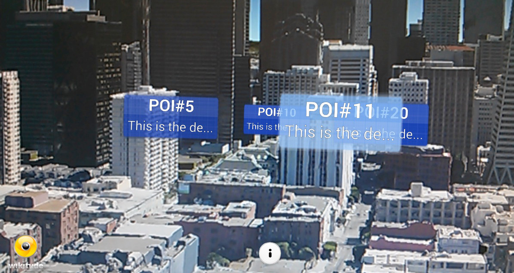
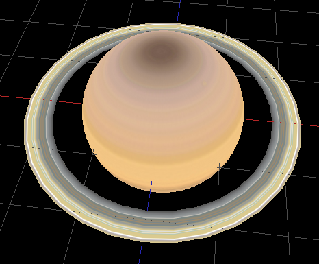
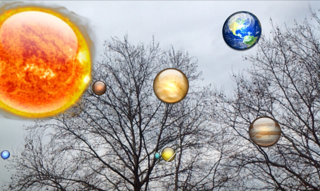
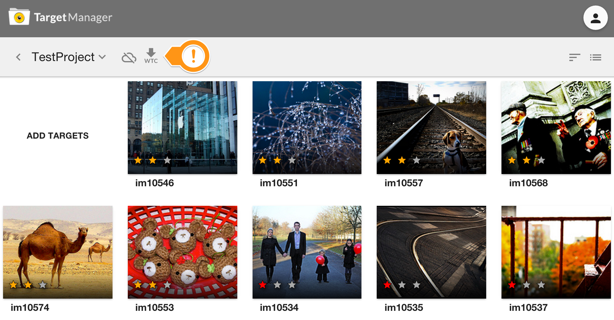
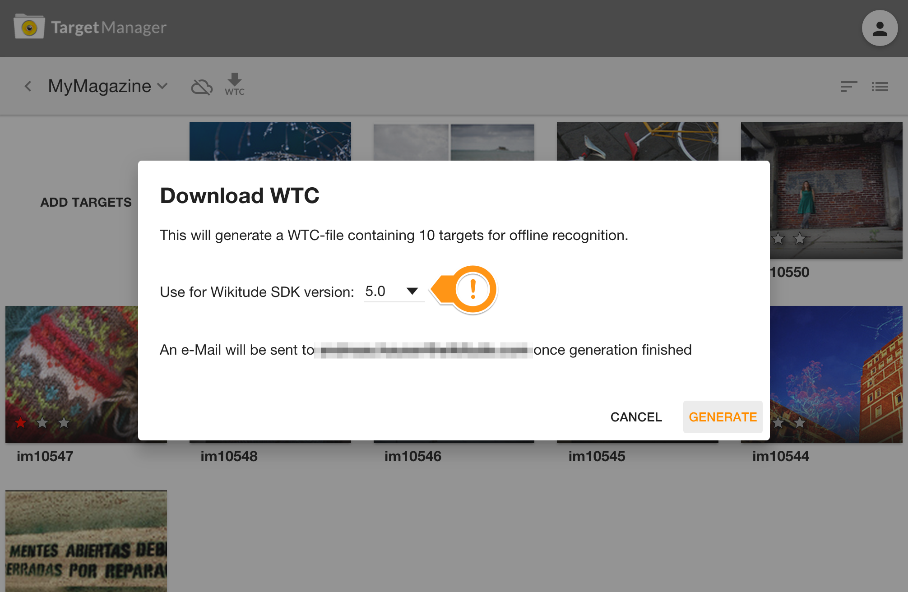
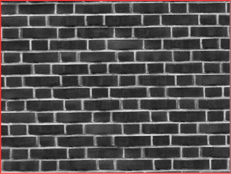

Getting started
Welcome to the Wikitude SDK. This document is designed to help you from your very first steps with the Wikitude SDK all the way through to advanced concepts and examples for developing your augmented reality project.
Recommended Usage of this Documentation
The documentation is arranged in a way to guide you through the various steps in your development process. We recommend following each of the steps outlined below and reading the documentation in the order displayed.
Setup your project
In this section we describe the necessary steps to setup a project in a detailed guide.
View the samples
All of the included samples are complete augmented reality experiences which run in SDKExamples app. Browse through this section and get an idea of what the SDK is capable of.The relevant parts of the samples are described in more detail to highlight the applied concepts and patterns. These examples are designed to help you get off to a great start with the Wikitude SDK.
Viewing samples based on vision based augmented reality requires the corresponding reference images. All of them are available directly in the description of the sample or available as a collection on this page, which you can either view on the screen or print.
Write your own Architect World
This section will introduce you to best practices for your development workflow once you write your own code for your augmented reality experience.
Get good at what you do
The Wikitude SDK comes with several tools which help you to develop more complex augmented reality experiences. This section covers how to use these tools and how they will assist you in your daily work.
The Wikitude SDK - Augmented Reality for your own app
The Wikitude SDK is a software library and framework for mobile apps used to create augmented reality experiences. The SDK supports any kind of location based use case as well as use cases which require image recognition and tracking technology (vision based augmented reality).
Architecture of the Wikitude SDK
The image above shows the different components of the Wikitude SDK and possible approaches for creating augmented reality apps. Each of these approaches is based on a certain development environments (IDE) and platforms:
- Computer Vision Engine: The computer vision engine is a core component of the Wikitude SDK and used by all platforms. It is not directly accessible, but wrapped either by the Native API or the JavaScript API.
- Wikitude SDK - Native API: Provides access to the Wikitude computer vision engine natively for Android (Java) and iOS (ObjC). It also can load plugins via the Wikitude Plugins API. (NOTE: Wikitude SDK plugins have nothing to do with the Cordova or Unity Plugin concept.)
- Wikitude SDK - JavaScript API: Allows to build augmented reality worlds on basis of HTML and JavaScript. It is available for Android and iOS. The JavaScript API provides access to the functionality of the computer vision engine, location based AR, the Plugins API and dedicated rendering functionality.
- Wikitude SDK - Plugins API: An API to connect your own plugins to the Wikitude SDK.
- Wikitude SDK - Cordova Plugin: On top of the JavaScript API the Cordova plugin allows to use the Wikitude SDK in combination with Apache Cordova.
- Wikitude SDK - Titanium Module: On top of the JavaScript API the Titanium module allows to use the Wikitude SDK in combination with Titanium.
- Wikitude SDK - Unity Plugin: On top of the Native API the Unity plugin allows to use the Wikitude SDK in combination with Unity.
- Wikitude SDK - Xamarin Component: On top of the JavaScript API the Cordova plugin allows to use the Wikitude SDK in combination with Xamarin.
How to code for the Wikitude SDK
The Wikitude SDK builds heavily on web technologies (HTML, JavaScript, CSS) to allow developers to write cross platform augmented reality experiences. These augmented reality experiences are called ARchitect worlds and are basically ordinary HTML pages that can utilize the ARchitect API to create objects in augmented reality.
Integrating the Wikitude SDK into your application is done by adding the platform specific view component called ARchitectView to your applications user interface. See the setup guide for how to setup a native project and load an ARchitect World.
Get started with writing augmented reality experiences by viewing through the examples included in the SDK. Each example is explained in detail in this documentation. Additional information about the ARchitect API can be found in the included API specification.
The Wikitude Developer Portal
The Wikitude Developer Section should be your first stop when you have specific development related questions. The portal hosts a very active Developer Community Forum where Wikitude staff members are constantly assisting other developers with helpful tips and advice. A Knowledge Base helps with various questions.
Feedback and Contact
We are always interested in your feedback and suggestions how we can improve this documentation. Please use the contact form on our website or visit us on Google+ or Facebook
Setup Guide Android
Project Setup Android Studio
This guide uses Android Studio, if for some reason you can't use Android Studio yet, please refer to the guide below on how to setup an Eclipse project. Please note that Eclipse support is deprecated with Wikitude SDK 5.0 release and won't be supported in future versions.
Create a new Android Application Project (There is also a working SampleProject bundled in this SDK, where all these steps are already made)
Copy the file
libs/wikitudesdk.aarinto the libs folder of your module. (project root/app/libs)Open
build.gradlefrom your module, add thewikitudesdk.aaras a dependency and tell gradle to search the libs folder, like in the code below.
android {
...
}
dependencies {
compile fileTree(dir: 'libs', include: ['*.jar'])
compile (name: 'wikitudesdk', ext:'aar')
compile 'com.android.support:appcompat-v7:21.0.3'
}
repositories {
flatDir{
dirs 'libs'
}
}
- If you already purchased a license, please set the applicationId to the package name you provided us with.
defaultConfig {
applicationId "xxxx"
}
- Add the following permissions to your AndroidManifest.xml
<uses-permission android:name="android.permission.INTERNET" />
<uses-permission android:name="android.permission.ACCESS_COARSE_LOCATION" />
<uses-permission android:name="android.permission.ACCESS_FINE_LOCATION" />
<uses-permission android:name="android.permission.ACCESS_NETWORK_STATE" />
<uses-permission android:name="android.permission.ACCESS_WIFI_STATE" />
<uses-permission android:name="android.permission.ACCESS_GPS" />
<uses-permission android:name="android.permission.CAMERA" />
<uses-permission android:name="android.permission.WRITE_EXTERNAL_STORAGE" />
<uses-feature android:name="android.hardware.camera" android:required="true" />
<uses-feature android:name="android.hardware.location" android:required="true" />
<uses-feature android:name="android.hardware.sensor.accelerometer" android:required="true" />
<uses-feature android:name="android.hardware.sensor.compass" android:required="true" />
<uses-feature android:glEsVersion="0x00020000" android:required="true" />
<uses-sdk android:targetSdkVersion="19" android:minSdkVersion="9"/>
- The activity holding the AR-View (called
architectViewin the following) must have setandroid:configChanges="screenSize|orientation"in theAndroidManifest.xml, for example this could look like:
<activity android:name="com.yourcompany.yourapp.YourArActivity"
android:configChanges="screenSize|orientation"/>
- Enter a valid trial license key. Read this chapter on how to obtain a free trial key.
Project Setup Eclipse
Please note that Eclipse support is deprecated with Wikitude SDK 5.0 release and won't be supported in future versions.
- Create a new Android Application Project (There is also a working SampleProject bundled in this SDK, where all these steps are already made)
- Create a
libsfolders in your project root directory and copylibs/wikitudesdk.jar In Eclipse enter
Preferences->Android->Buildand ensure the optionForce error when external jars contain native librariesis unchecked
Add the following permissions to your Manifest.xml
<uses-permission android:name="android.permission.INTERNET" />
<uses-permission android:name="android.permission.ACCESS_COARSE_LOCATION" />
<uses-permission android:name="android.permission.ACCESS_FINE_LOCATION" />
<uses-permission android:name="android.permission.ACCESS_NETWORK_STATE" />
<uses-permission android:name="android.permission.ACCESS_WIFI_STATE" />
<uses-permission android:name="android.permission.ACCESS_GPS" />
<uses-permission android:name="android.permission.CAMERA" />
<uses-permission android:name="android.permission.WRITE_EXTERNAL_STORAGE" />
<uses-feature android:name="android.hardware.camera" android:required="true" />
<uses-feature android:name="android.hardware.location" android:required="true" />
<uses-feature android:name="android.hardware.sensor.accelerometer" android:required="true" />
<uses-feature android:name="android.hardware.sensor.compass" android:required="true" />
<uses-feature android:glEsVersion="0x00020000" android:required="true" />
<uses-sdk android:targetSdkVersion="19" android:minSdkVersion="9"/>
- The activity holding the AR-View (called
architectViewin the following) must have setandroid:configChanges="screenSize|orientation"in theAndroidManifest.xml, for example this could look like:
<activity android:name="com.yourcompany.yourapp.YourArActivity"
android:configChanges="screenSize|orientation"/>
- Enter a valid trial license key. Read this chapter on how to obtain a free trial key.
AR View in Activity
Keep in mind that the Wikitude SDK is not a native Android SDK as you know from other SDK's. The basic concept is to add an architectView to your project and notify it about lifecycle events. The architectView creates a camera surface and handles sensor events.
The experience itself, sometime referred to as ARchitect World, is implemented in JavaScript and packaged in your application's asset-folder (as in this project) or on your own server.
The experiences are written in HTML and JavaScript and call methods in Wikitude's AR-namespace (e.g. AR.GeoObject).
You have to include
<script src="architect://architect.js"></script>
in your HTML files to use the AR namespace and the architectView will handle them properly. To test an ARchitect World on a desktop browser, you must include ade.js tool instead to avoid JavaScript errors and see a development console.
It is recommended to handle your augmented reality experience in a separate Activity.
Declare the architectView inside a layout XML.
E.g. Add this within FrameLayout's parent tags.
<com.wikitude.architect.ArchitectView android:id="@+id/architectView"
android:layout_width="fill_parent" android:layout_height="fill_parent"/>
ArchitectView is creating a camera surface so ensure to properly release the camera in case you're using it somewhere else in your application.
Besides a camera (front or back-facing) the ArchitectView also makes use of compass and accelerometer values, requires OpenGL 2.0 and at least Android 4.0.
ArchitectView.isDeviceSupported(Context context) checks whether the current device has all required hard- and software in place or not.
It is very important to notify the ArchitectView about life-cycle events of the Activity.
Call architectView's onCreate(), onPostCreate(), onPause(), onResume(), onDestroy() inside your Activity's lifecycle methods.
Best practice is to define a member variable for the architectView in your Activity. Set it right after setContentViewin Activity's onCreate(), and then access architectView via member-variable later on.
this.architectView = (ArchitectView)this.findViewById( R.id.architectView );
final StartupConfiguration config = new StartupConfiguration( * license key */ );
this.architectView.onCreate( config );
Activity's onPostCreate() is the best place to load the AR experience.
this.architectView.onPostCreate();
this.architectView.load( "YOUR-AR-URL" );
The architectView.load() argument is the path to the html file that defines your AR experience. It can be relative to the asset folder root or a web-url (starting with http:// or https://).
e.g. architectView.load('arexperience.html') opens the html in your project's assets-folder, whereat architectView.load('http://your-server.com/arexperience.html') loads the file from a server.
architectView.load('arexperience.html?myarg=1')
Location
Management of the location is important in location based augmented reality applications. Depending on the use-case location is used via GPS or network and may be updated every second or once in a while.
Although the SDKExamples project provides a basic implementation of a LocationProvider this is by far not the best location strategy available for Android.
Please use your own advanced location strategy implementation in case you have special requirements.
Supported Android Devices
Wikitude SDK is running on devices fulfilling the following requirements:
| Sensor-based AR (Geo-AR) | Image recognition and tracking | |
|---|---|---|
| Android |
|
|
Requirements for other operating systems and platforms are listed in this overview.
Supported Devices
Wikitude SDK is running on devices fulfilling the following requirements:
| Sensor-based AR (Geo-AR) | Image recognition and tracking | |
|---|---|---|
| Android |
|
|
| Epson |
|
|
| Google Glass |
|
|
| iOS |
|
|
| Vuzix |
|
|
How to obtain a free trial license
The Wikitude SDK requires a valid license key to be able to run properly. An empty or missing license key will block the augmented reality view from showing any meaningful content. You will see a watermark across the screen with the words License Key Missing. All JavaScript API calls will be ignored and not interpreted.
When downloading the Wikitude SDK you will be forwarded to the license generation page, where a trial license key is automatically generated for you.

Copy the key into your app, which will unlock the trial mode of the Wikitude SDK. The trial mode of the Wikitude SDK contains the full feature set of the Wikitude SDK but will show a Trial watermark across the screen.
Each trial license key is valid for every application ID on every operating system. You can use the same trial license key in multiple apps.
Where should I enter the license key
Android
To use the Wikitude Android SDK you need to provide a valid license key to the onCreate lifecycle-method of the ArchitectView. This can either be done directly by providing the key as a string and the call the onCreate(final String key) method or creating an StartupConfiguration object, passing it the license as a string and then call the onCreate(final StartupConfiguration config) method. Please refer to the AbstractArchitectCamActivity of the SDK Examples project for a practical example of how to set the license key.
Examples
The following examples should give you an overview of the capabilities offered by the Wikitude SDK. Each sample is capable of running without modifications on all supported platforms.
Each of the included examples is structured as following:
index.html: entry point for the experiencejs/*: includes the necessary JavaScript filescss/*: css style sheets requiredassets/*: contains images, 3D models and tracker files
Inside the js/ folder the main JavaScript file is named like the example. (the example Image Recognition has its JavaScript code in the js/clientrecognition.js file). Code which is mentioned in the description of the examples can be found in this file, if not explicitly stated otherwise.
Samples on GitHub
If you are just interested in browsing through the code of the augmented reality experience you can also find the entire source code of the samples on GitHub
Android SDK Examples
This section describes the SDK Sample project in detail and highlights the main features and use-cases of the Wikitude SDK.
The project is part of the SDK bundle and is an Android Studio project, ready to run on any of the supported Android devices.
Note: You cannot run Wikitude SDK project on Android Emulator due to OpenGL restrictions.
Run through the setup guide, install the sample project on your device and scroll through the sample list.
The project's asset folder contains implementation of the various ARchitect Worlds.
Implementation of the native Android activities is available in the src folder.
Setup
- Download latest Android SDK through the Android Studio Bundle (either Mac OS or Windows)
- From the main menu select
Open an existing Android Studio projectwhich will open the import wizard. - Navigate to the
SDKExamplesproject folder in your filesystem. - Click
Finishto start the import. - Right click the project folder, click
PreferencesandAndroid Ensure you have very latest SDK (14+) checked in the Build Target list

Use an Android device that has all hard- and software requirements (see Supported Devices) and enable your location services in system settings
- Enter
Settings->Applications->Developer-> checkUSB debugging - Plug in the device via USB.
- Right click the project folder again select
Run as…-Android Applicationand select the target device - The sample application is then installed onto your device
Communication between JavaScript and Android Native (Java)
The samples mainly describe how to launch an AR experience in your Android activity - anything relevant for AR is written in the provided HTML and JavaScript file.
Although it is highly recommended to implement logic in pure HTML and JavaScript at some point in time it makes sense to interact between native Android and the JavaScript of your AR experience.
One may for instance pass data for points of interest (POI) from native Android to JavaScript.
Define a method named newData(json) in the JavaScript file and use architectView.callJavascript(newData('" + poiDataAsJson +")') to call the method and pass over the values properly. JSON Format is the fastest way to pass bulk of information, like translations, metadata and POI information over to your JavaScript.
There are several ways to create a JSON in Android.
Sometimes events like a click in your AR experience should cause a reaction in native Android, like launching another screen when clicking a placemark or image target. To achieve that you need to register a urlListener using architectView.registerUrlListener() in the activity.
Any document.location changes to architectsdk:// will fire an event in your listener (e.g. document.location = architectsdk://YOUR-INFO). Listener is informed about the invoked url and can then react on.
Note: Missing urlListener registration will cause an HTTP error when calling document.location = architectsdk://YOUR-INFO
Client Recognition
This example shows how to recognize images in the viewfinder and overlay it with images. Furthermore it shows how to recognize multiple different images and how to react on user clicks on the overlaid elements.
For a better understanding, here are some terms that will be used in the following and other section of this documentation related to vision-based augmented reality.
Target: A target image and its associated extracted data that is used by the tracker to recognize an image.
Target collection: An archive storing a collection of targets that can be recognized by the tracker. A target collection can hold up to 1000 targets.
ClientTracker: The tracker analyzes the live camera image and detects the targets stored in its associated target collection. Multiple trackers can be created, however only one tracker can be active for recognition at any given time.
This sample consists of five parts
- Image on Target
- Multiple Targets
- Extended Tracking
- Interactivity
- Adding HTML content
- Bonus: Sparkle Animations
- Bonus: Distance to target
Image on Target (1/7)
With these terms in mind let's start by defining what actually should be recognized (target) and create a corresponding target collection that the tracker can use. In this case, the target collection includes the following single magazine page.
To view the sample you can use the image in on this page

See Target Management for instructions about how to create target collections which can be used in the Wikitude SDK.
This is the same process for every use of image recognition in ARchitect. You'll first need to define your targets and then create a target collection for it. Now let us have a look at the JavaScript for enabling image recognition.
// Initialize ClientTracker
// Important: If you replace the tracker file with your own, make sure to change the target name accordingly.
// Use a specific target name to match only a certain target or use a wildcard to match any or a certain group of targets.
this.tracker = new AR.ClientTracker("assets/magazine.wtc", {
onLoaded: this.worldLoaded
});
// Create overlay for page one
var imgOne = new AR.ImageResource("assets/imageOne.png");
var overlayOne = new AR.ImageDrawable(imgOne, 1, {
offsetX: -0.15,
offsetY: 0
});
var pageOne = new AR.Trackable2DObject(this.tracker, "*", {
drawables: {
cam: overlayOne
}
});
First an AR.ClientTracker needs to be created in order to start the recognition engine. It is initialized with a URL specific to the target collection. Optional parameters are passed as object in the last argument. In this case a callback function for the onLoaded trigger is set. Once the tracker is fully loaded the function worldLoaded() is called.
The next step is to create the augmentation. In this example an image resource is created and passed to the AR.ImageDrawable. A drawable is a visual component that can be connected to an target image AR.Trackable2DObject or a geolocated object AR.GeoObject. The AR.ImageDrawable is initialized by the image and its size. Optional parameters allow for position it relative to the recognized target.
The last line combines everything by creating an AR.Trackable2DObject with the previously created tracker, the name of the image target and the drawable that should augment the recognized image.
Please note that in this case the target name is a wildcard *. Wildcards can be used to match any target defined in the target collection. If you want to match specific targets only for a particular AR.Trackable2DObject simply provide the target name as specified in the target collection.
- Upload your images to the target management tool (log-in required)
- Generate your target collection file (.wtc)
- In your code create an
AR.ClientTrackerand load the target collection file from the previous step - Create an AR.Trackable2DObject and assign your targetName
Make sure that the
targetName used with the AR.Trackable2DObject correspond to one of the target names in your target collection. You can also use a wildcard to match any target or only a specific subset of targets. Please refer to the AR.Trackable2DObject main documentation for more information about wildcards.
Multiple Targets (2/7)
Adding multiple targets to a target collection is straightforward. Simply follow the guide at Target Management. Each target in the target collection is identified by its targetName. By using this targetName, it is possible to create an AR.Trackable2DObject for every target in the target collection.
To view the sample you can use the image in on this page

// Create overlay for page two
var imgTwo = new AR.ImageResource("assets/imageTwo.png");
var overlayTwo = new AR.ImageDrawable(imgTwo, 0.5, {
offsetX: 0.12,
offsetY: -0.01
});
var pageTwo = new AR.Trackable2DObject(this.tracker, "pageTwo", {
drawables: {
cam: overlayTwo
}
});
Similar to the first part, the image resource and the AR.ImageDrawable for the second overlay are created. The AR.Trackable2DObject for the second page uses the same tracker but with a different target name.
Extended Tracking (3/7)
Extended tracking is an optional mode you can set for each AR.Trackable2DObject separately. In this mode the Wikitude SDK will scan the environment of the user and try to keep track of the scene even if the original target image is not in view anymore. So the tracking extends beyond the limits of the original target image. The performance of this feature depends on various factors like computing power of the device, background texture and objects.
If a target is enabled for extended tracking the onExitFieldOfVision trigger is not called when the original target image is not visible anymore, but once the extended tracking is interrupted.
If you don't need this feature, we recommend not to enable it to avoid high CPU load.
In the sample the AR.Trackable2DObject is defined as usual with the difference that the option enableExtendedTracking is set to true.
If you need informations about the quality of the extended tracking, you must define the callback function onExtendedTrackingQualityChanged like in the example below.
var pageOne = new AR.Trackable2DObject(this.tracker, "*", {
drawables: {
cam: [pipes]
},
enableExtendedTracking: true,
onExtendedTrackingQualityChanged: function (targetName, oldTrackingQuality, newTrackingQuality) {
var backgroundColor;
var trackingQualityText;
if ( -1 == newTrackingQuality ) {
backgroundColor = '#FF3420';
trackingQualityText = 'Bad';
} else if ( 0 == newTrackingQuality ) {
backgroundColor = '#FFD900';
trackingQualityText = 'Average';
} else {
backgroundColor = '#6BFF00';
trackingQualityText = 'Good';
}
var cssDivInstructions = " style='display: table-cell;vertical-align: middle; text-align: middle; width: 50%; padding-right: 15px;'";
var messageBox = document.getElementById('loadingMessage');
messageBox.style.backgroundColor = backgroundColor;
messageBox.innerHTML = "<div" + cssDivInstructions + ">Tracking Quality: " + trackingQualityText + "</div>";
messageBox.style.display = 'block';
}
});
With that enabled the tracking will continue even if the target image is lost.
Interactivity (4/7)
The final step is to add interactivity to the image target. For this example a button is added to each target that opens a webpage.
The button is created similar to the overlay feature. An AR.ImageResource defines the look of the button and is reused for both buttons.
this.imgButton = new AR.ImageResource("assets/wwwButton.png");
For each target an AR.ImageDrawable for the button is created by utilizing the helper function createWwwButton(url, options). The returned drawable is then added to the drawables.cam array on creation of the AR.Trackable2DObject.
var pageOneButton = this.createWwwButton("http://www.wikitude.com/pageone", 0.1, {
offsetX: -0.25,
offsetY: -0.25
});
var pageOne = new AR.Trackable2DObject(this.tracker, "pageOne", {
drawables: {
cam: [overlayOne, pageOneButton]
}
});
As the button should be clickable the onClick trigger is defined in the options passed to the AR.ImageDrawable. In general each drawable can be made clickable by defining its onClick trigger.
createWwwButton: function createWwwButtonFn(url, size, options) {
options.onClick = function() {
AR.context.openInBrowser(url);
};
return new AR.ImageDrawable(this.imgButton, size, options);
},
The function assigned to the click trigger calls AR.context.openInBrowser with the specified URL, which opens the URL in the browser.
Adding HTML content (5/7)
Using an AR.HtmlDrawable it is possible to display HTML content inside the AR scene, the same way images are displayed. In this example a weather widget is added on top of the image target to present the real-time weather in Maui, Hawaii.
In general any HTML content can be loaded by passing a relative or absolute URL. Additionally HTML content can also be passed as a string; please see the API reference for more details on how to specify the content when creating the drawable. This example uses a relative URL to the weather widget that is stored as .html file in the example's assets subfolder.
Once the content has been chosen it is important to think about the viewport the content will need in order to be laid out correctly. The viewport is the area that is available to the HTML content when it is rendered. It is independent of the actual area the AR.HtmlDrawable will need on screen when placed in the AR scene.
The viewport width and height needs to be set when constructing the AR.HtmlDrawable and should also be set as meta tag inside the HTML content that is used. This tells the HTML rendering engine to use the specified viewport size during rendering.
<meta name="viewport"
content="target-densitydpi=device-dpi, width = 320, user-scalable = 0">
Make sure that the value of width is set according to the size (in pixel) the HTML content needs. It should also correspond to the viewportWidth value specified during the creation of the AR.HtmlDrawable.
Similar to viewportWidth the viewportHeight is specified to define the available pixel height during rendering of the content. If you are unsure of the pixel size of the HTML content at hand, you can use the developer tools built into modern browsers (e.g. WebInspector) to take measure.
In the code example below we are putting that all together to a working AR.HtmlDrawable. The created drawable is added to the list of AR.Trackable2DObject drawables just like any other drawable.
var weatherWidget = new AR.HtmlDrawable({
uri: "assets/weather.html"
}, 0.25, {
viewportWidth: 320,
viewportHeight: 100,
backgroundColor: "#FFFFFF",
offsetX: +0.36,
offsetY: 0.5,
horizontalAnchor: AR.CONST.HORIZONTAL_ANCHOR.RIGHT,
verticalAnchor: AR.CONST.VERTICAL_ANCHOR.TOP,
clickThroughEnabled: true,
allowDocumentLocationChanges: false,
onDocumentLocationChanged: function onDocumentLocationChangedFn(uri) {
AR.context.openInBrowser(uri);
}
});
var pageOne = new AR.Trackable2DObject(this.tracker, "pageOne", {
drawables: {
cam: [overlayOne, pageOneButton, weatherWidget, sparkles]
}
});
Interaction with an AR.HtmlDrawable is controlled with the clickThroughEnabled and allowDocumentLocationChanges properties. Setting clickThroughEnabled will forward click events to the HTML content making it possible to follow links or click buttons. If the content of the HTML drawable should not change allowDocumentLocationChanges can be set to false so links are not followed. It is still possible to react on clicked links by using the onDocumentLocationChanged trigger. The example uses this trigger to open clicked links fullscreen in a browser. The result then looks like this

Bonus: Sparkles (6/7)
This section adds a little bonus to the above example. Sprite sheet animations can be used to animate images similar to animated GIFs and are used in this example to add sparkles to the overlay.
A sprite sheet is an image file that contains all key frame images required for the animation. The key frame image size (width and height) is passed at creation time and must be equal for all key frame images. Key frame images will be managed in an array, starting with entry 0. The key frame image array will be filled from left to right, row by row. Any partly filled key frames at the edge of the sprites sheet will be ignored.

First the image resource is created which is used for creating the AR.AnimatedImageDrawable. Since the width/height of the sprite sheet is 512 and it carries 16 key frames, the width and height of a single image is 128. So we set 128 as the width and height of the AR.AnimatedImageDrawable.
// Sparkles
var imgSparkles = new AR.ImageResource("assets/imageSparkles.png");
var sparkles = new AR.AnimatedImageDrawable(imgSparkles, 0.25, 128, 128, {
offsetX: -0.2,
offsetY: 0.5,
rotation: 75
});
To start the animation the order of the keyframes needs to be passed as array. Additionally the time each frame is displayed in ms and the loop count needs to be defined. In this case each image is displayed 100ms before it changes and a loop count of -1 plays the animation in an infinite loop.
sparkles.animate([0, 1, 2, 3, 4, 5, 6, 7, 8, 9, 10, 11, 12, 13, 14, 15], 100, -1);
The last step is to add it as drawable to the AR.Trackable2DObject so it will be overlaid on the first page.
var pageOne = new AR.Trackable2DObject(this.tracker, "pageOne", {
drawables: {
cam: [overlayOne, pageOneButton, weatherWidget, sparkles]
}
});
Bonus: Distance to target (7/7)
This section shows how to measure the distance to a given target, and how to react to changes in the measured value.
The AR scene is based on the code of the first sample, with a target collection containing just one target.
We define the physical size of the target when creating the ClientTracker.
This is not always necessary, since a target collection can include the definition of the physical size for all targets (see Target Management for more details).
The physicalTargetImageHeights option is used for this purpose, with values in millimeters for each target.
For this example, we assume the target is printed on a standard A4 sheet with a physical height of 286mm, if your target size is different, change the value accordingly, otherwise the measurement won't be very accurate.
this.tracker = new AR.ClientTracker("assets/magazine.wtc", {
onLoaded: this.worldLoaded,
physicalTargetImageHeights: {
pageOne: 286
}
});
Then we declare the callback function to be called when the distance changes, and the change threshold in millimeters to trigger the event:
var pageOne = new AR.Trackable2DObject(this.tracker, "*", {
drawables: {
cam: overlayOne
},
distanceToTarget: {
changedThreshold: 1,
onDistanceChanged: function(distance) {
document.getElementById('distanceDisplay').innerHTML = "Distance from target: " + distance / 10 + " cm";
overlayOne.rotation = distance;
}
},
onExitFieldOfVision: function() {
document.getElementById('distanceDisplay').innerHTML = "Distance from target: unknown";
}
});
The drawable definition is just the same as the first section.
The option distanceToTarget describes how the tracker will react to changes. The threshold is set to 1 millimeter, and the callback function displays the value on the bottom of the screen, and rotates the augmentation when the user moves towards the target or away from it.
We also define an onExitFieldOfVision trigger because we don't want to show any information when the target is not visible.
Cloud Recognition
This example shows how to recognize images on a cloud server and then overlay it with augmentations utilizing the AR.CloudTracker class.
For a better understanding, here are some terms that will be used in the following and other sections of this documentation related to vision-based augmented reality.
Target: An image and its associated extracted data that is used to recognize an image.
Target Collection: A group of
targetsthat are searched together. Think of it as a directory, which contains all your images you want to search. The Wikitude SDK can work with two different sorts ofTarget Collections- On-device Target Collection: a static
wtcfile containing the extracted data of your images. Can consist of up to 1,000 images. - Cloud Target Collection: A target collection stored on the Wikitude server. See
Cloud Archivebelow. Can consist of up to 50,000 images.
- On-device Target Collection: a static
Cloud Archive: An archive stored on the server that is optimized for cloud-based recognition. It is generated from a
Target Collectionand is used in combination withAR.CloudTracker.CloudTracker: Instead of analysing and computing the live camera feed directly on the device like the
AR.ClientTracker, theAR.CloudTrackerwill send the image(s) taken by the camera to the Wikitude Cloud Recognition server. The server will then do the hard work of trying to match the image with your targets in the specified cloud archive. Beside the benefit of searching in large image database using theAR.CloudTrackerinstead ofAR.ClientTrackerhas also a positive impact on the general performance in most cases. Especially when using a large target collection and on older devices.
This sample consists of three parts
The sample is based on a use-case to recognize wine labels directly from wine bottles. We have set-up a target collection on the Wikitude server hosting several wine-labels from around the world.
Basic Recognition On-Click (1/3)
The goal of this and the following samples in this section is to recognize and augment the wine labels in the image below. All three samples build on each other and functionality is added/improved in each sample.


Please note that in this section a public cloud archive will be used. See the documentation for the Manager API for instructions how to create your own cloud archives which can be used with the Wikitude SDK.
Regional server endpoints
Before we get started please note that you have to choose which regional-distributed Wikitude server the SDK should contact.
The cloud recognition server region can be selected by calling the AR.context.setCloudRecognitionServerRegion function from JavaScript with on of the following constants.
AR.CONST.CLOUD_RECOGNITION_SERVER_REGION.AMERICAS
AR.CONST.CLOUD_RECOGNITION_SERVER_REGION.CHINA
AR.CONST.CLOUD_RECOGNITION_SERVER_REGION.EUROPE
The default behaviour is Europe. In case of a wrong value the SDK will silently choose Europe.
Now let's get on with the first sample and have a look at the first part of the JavaScript code - the init function.
init: function initFn() {
this.createTracker();
this.createOverlays();
},
Once the wine is recognized we want to display a banner which shows a rating, the wine label and in later chapters the name of the recognized wine to the end user. To keep this example simple we will reuse the same banner image on every target. Because of that we are able to load the image once and reuse again and again. This will be done in the createOverlays function, the second function call in the init function above.
createOverlays: function createOverlaysFn() {
this.bannerImg = new AR.ImageResource("assets/banner.jpg");
this.bannerImgOverlay = new AR.ImageDrawable(this.bannerImg, 0.4, {
offsetX: 0,
offsetY: -0.6,
});
},
First an image resource is created and then passed to an AR.ImageDrawable. A drawable is a visual component that can be connected to an image recognized target (AR.Trackable2DObject) or a geolocated object (AR.GeoObject). The AR.ImageDrawable is initialized by the image and its size. Optional parameters allow to position it relative to the recognized target.
After we laid the groundwork in the previous function let's move on to the first call in the init function, the createTracker function.
createTracker: function createTrackerFn() {
World.tracker = new AR.CloudTracker("b277eeadc6183ab57a83b07682b3ceba", "54e4b9fe6134bb74351b2aa3", {
onLoaded: this.worldLoaded,
onError: this.trackerError
});
},
As you can see in the code above we pass three parameters to the AR.CloudTracker. The first parameter represents the Client API authentication token, in the example above we will use the public Wikitude authentication token. Read more about authentication and tokens here. The second parameter represents the target collection id. This unique id will identify which cloud archive the AR.CloudTracker will use from all the cloud archives connected to your authentication token. Optional parameters are passed as object in the last argument. In this case a callback function for the onLoaded and onError trigger are set.
Once the server fully loaded the AR.CloudTracker the worldLoaded() function is called. If there was a problem initializing the AR.CloudTracker the SDK will call the function trackerError(). Note the initialization can take a few seconds, especially when working with large cloud archives.
After the SDK calls the worldLoaded() function we continue with our wine sample and want to display a 'Scan'-Button to the user. Clicking this button starts the image recognition process by sending the current camera frame to the cloud recognition server. The next code fragment contains the onClick listener function for this button.
scan: function scanFn() {
World.tracker.recognize(this.onRecognition, this.onRecognitionError);
},
After the user clicked the "Scan" button the Wikitude SDK calls the recognize function on the previously created AR.CloudTracker. The tracker recognize function is passed two callback functions. The first callback will be called by the SDK after each recognition cycle. The second will be called if there is something wrong with the specified cloud archive.
The next code snipped contains the first callback function onRecognition.
onRecognition: function onRecognitionFn(recognized, response) {
if (recognized) {
if (World.wineLabel !== undefined) {
World.wineLabel.destroy();
}
if (World.wineLabelOverlay !== undefined) {
World.wineLabelOverlay.destroy();
}
World.wineLabel = new AR.ImageResource("assets/" + response.targetInfo.name + ".jpg");
World.wineLabelOverlay = new AR.ImageDrawable(World.wineLabel, 0.3, {
offsetX: -0.5,
offsetY: -0.6,
zOrder: 1
});
if (World.wineLabelAugmentation !== undefined) {
World.wineLabelAugmentation.destroy();
}
World.wineLabelAugmentation = new AR.Trackable2DObject(World.tracker, response.targetInfo.name , {
drawables: {
cam: [World.bannerImgOverlay, World.wineLabelOverlay]
}
});
} else {
document.getElementById('errorMessage').innerHTML = "<div class='errorMessage'>Recognition failed, please try again!</div>";
setTimeout(function() {
var e = document.getElementById('errorMessage');
e.removeChild(e.firstChild);
}, 3000);
}
},
The first parameter of this callback function is a boolean value which indicates if the server was able to recognize the target, its value will either be 0 or 1 depending on the outcome. The second parameter is a JSON object which will contain metadata about the recognized target. If a target was recognized this JSON object will contain another JSON object named targetInfo, which consists of the target name (targetName), its star rating (rating) and optional its physical height. If no target was recognized the JSON object will be empty. More information on the response object will follow in the next chapters.
If the recognition was successful we would like to display the banner augmentation. To display the label of the recognized wine on top of the previously created banner, another overlay is defined. The property targetInfo.name contained in the response object is read to load the equally named image file. The zOrder property (defaults to 0) is set to 1 to make sure it will be positioned on top of the banner.
After that, we combine everything by creating an AR.Trackable2DObject using the CloudTracker, the name of the image target (targetInfo.name) and the drawables that should augment the recognized image.
If on the other hand the recognition failed we will show an error message to the user.
Continuous Recognition vs On-click (2/3)
This chapter will build upon the first chapter. Only relevant changes will be shown, please read the previous chapter before continuing.
In the first sample of this section we triggered the recognition mode manually ("Tap To Scan"). This is useful in some situations but sometime you probably want to use the continuous mode ("Continuous Search"), explained in the following chapter. The main difference is that the recognition will now be triggered continuously in a defined time interval instead of once by a manual click.
Let's look at the changes necessary to enable this functionality.
The first change takes place in the 'trackerLoaded' function. In the sample before we would only show some instructions to the user, now we'll also start the continuous recognition mode.
trackerLoaded: function trackerLoadedFn() {
this.startContinuousRecognition(750);
this.showUserInstructions();
},
We call the function startContinuousRecognition with the parameter 750. This parameter represents a time interval which we'll use to tell the SDK how often a recognition should be started. The snippet below shows the code of the function startContinuousRecognition.
startContinuousRecognition: function startContinuousRecognitionFn(interval) {
this.tracker.startContinuousRecognition(interval, this.onRecognition, this.onRecognitionError, this.onInterruption);
},
In the function above we start the continuous recognition by calling the startContinuousRecognition function of the AR.CloudTracker. It is passed four parameters, the first is the already mentioned time interval in which a new recognition is started. It is set in milliseconds and the minimum value is 500. The second parameter defines a callback function for when a recognition cycle is completed. The third parameter defines the onRecognitionError callback. The fourth and last parameter defines yet another callback function which is called by the SDK if the recognition interval was set too high for the current network speed.
We will now take a look at the changes to the callback functions. The onRecognition function has a slight change, the onRecognitionError function stays the same and there is a new callback called onInterruption.
First the onRecognition function.
onRecognition: function onRecognitionFn(recognized, response) {
if (recognized) {
if (World.wineLabel !== undefined) {
World.wineLabel.destroy();
}
if (World.wineLabelOverlay !== undefined) {
World.wineLabelOverlay.destroy();
}
World.wineLabel = new AR.ImageResource("assets/" + response.targetInfo.name + ".jpg");
World.wineLabelOverlay = new AR.ImageDrawable(World.wineLabel, 0.27, {
offsetX: -0.5,
offsetY: -0.6,
zOrder: 1
});
if (World.wineLabelAugmentation !== undefined) {
World.wineLabelAugmentation.destroy();
}
World.wineLabelAugmentation = new AR.Trackable2DObject(World.tracker, response.targetInfo.name , {
drawables: {
cam: [World.bannerImgOverlay, World.wineLabelOverlay]
}
});
}
},
The only change is that we removed the error message when there was no recognition since this will happen fairly often when the user does not point the camera on the actual target.
The next function onInterruption wasn't necessary in the last example. Take a look at it in the next snippet.
onInterruption: function onInterruptionFn(suggestedInterval) {
World.tracker.stopContinuousRecognition();
World.tracker.startContinuousRecognition(suggestedInterval);
},
In case the current network speed isn't fast enough for the set interval, the Wikitude SDK calls this callback function with a new suggested interval more appropriate to the current network speed. To set the new interval the recognition mode will be restarted.
This example showed how to enable the continuous mode of AR.CloudTracker, in the next sample we will take a look at how to use the server response object and custom metadata.
Using MetaInformation in the response (3/3)
As the previous chapter this chapter builds upon the chapters before. Again please read the first two chapters before you get started with this.
In this section we add another augmentation for the end user. Again the image overlay does not change depending on the recognized target, so we create it once in the createOverlays function. Let's have a look.
createOverlays: function createOverlaysFn() {
this.bannerImg = new AR.ImageResource("assets/bannerWithNameField.jpg");
this.bannerImgOverlay = new AR.ImageDrawable(this.bannerImg, 0.4, {
offsetX: 0,
offsetY: 0.6,
});
this.orderNowButtonImg = new AR.ImageResource("assets/orderNowButton.png");
this.orderNowButtonOverlay = new AR.ImageDrawable(this.orderNowButtonImg, 0.3, {
offsetX: 0,
offsetY: -0.6,
});
},
The new augmentation we will display is an "Order Now" button. It is created in the same manner as the previous augmentations.
All other changes took place in the 'onRecognition' function shown below.
onRecognition: function onRecognitionFn(recognized, response) {
if (recognized) {
if (World.wineLabelOverlay !== undefined) {
World.wineLabel.destroy();
}
if (World.wineLabelOverlay !== undefined) {
World.wineLabelOverlay.destroy();
}
World.wineLabel = new AR.ImageResource("assets/" + response.targetInfo.name + ".jpg");
World.wineLabelOverlay = new AR.ImageDrawable(World.wineLabel, 0.2, {
offsetX: -0.37,
offsetY: 0.55,
zOrder: 1
});
World.wineName = new AR.Label(response.metadata.name, 0.06, {
offsetY: 0.72,
zOrder: 2
});
if (World.wineLabelAugmentation !== undefined) {
World.wineLabelAugmentation.destroy();
}
World.wineLabelAugmentation = new AR.Trackable2DObject(World.tracker, response.targetInfo.name , {
drawables: {
cam: [World.bannerImgOverlay, World.wineLabelOverlay, World.wineName]
}
});
World.orderNowButtonOverlay.onClick = function() {
AR.context.openInBrowser(response.metadata.shop_url);
}
if (World.orderNowAugmentation !== undefined) {
World.orderNowAugmentation.destroy();
}
World.orderNowAugmentation = new AR.Trackable2DObject(World.tracker, response.targetInfo.name, {
drawables: {
cam: World.orderNowButtonOverlay
}
});
}
},
When the cloud archive was created custom metadata for every target was defined. You are a free to choose the content of the metadata depending on your needs. See the Manager API documentation on how to add metadata for a target. For this example, we created two fields:
metadata.namewhich represents the real name of the wine andmetadata.shop_urla url to a webshop stocking the particular wine were defined.
The corresponding JSON when creating targets on the Manager API looks like the following:
"metadata":{
"name":"Lote 43 Cabernet Sauvignon-Merlot",
"shop_url":"http://loja.miolo.com.br/ch/index.aspx"
}
To display the name of the wine in the banner overlay, an AR.Label is created. The first parameter defines the text of the label, the second its height in SDUs, the third parameter sets some optional options. To set the first parameter of the AR.Label we read the before mentioned name from the custom metadata object. Since the response object returned by the server is a JSON object it is possible to navigate it by dot notation.
Like the AR.ImageDrawable objects we created before, we add the AR.Label to the AR.Trackable2DObject which combines everything for our banner.
Next we add a onClick handler to the orderNowButtonOverlay where we make use of the AR.context class to open the shop's website in browser. Again we utilize the server response object and our custom metadata to read the url for the current target from shop_url.
3D Models
This example shows how to augment a target image with 3D content. It starts by displaying a 3D model on a target and advances by adding displayed animations, interactivity and demonstrates the snap-to-screen functionality. The last example shows how 3D content can be placed at a certain geographic location.
If you are not yet familiar with how to create a vision based augmented reality scene (based on image recognition and tracking), please have a look at the previous example Client Recognition.
3D content within Wikitude can only be loaded from Wikitude 3D Format files (.wt3). This is a compressed binary format for describing 3D content which is optimized for fast loading and handling of 3D content on a mobile device. You still can use 3D models from your favorite 3D modeling tools (Autodesk® Maya® or Blender) but you'll need to convert them into the wt3 file format. The Wikitude 3D Encoder desktop application (Windows and Mac) encodes your 3D source file. The Encoder can handle Autodesk® FBX® files (.fbx) and the open standard Collada (.dae) file formats for encoding to .wt3.
For more details on how to convert your 3D content please see the Wikitude 3D Encoder section. In this example the .wt3 file has already been prepared and saved to assets/car.wt3.
3D content is rendered on top of 2D objects. This limitation exists because of some SDK internal restrictions and might change in an upcoming release.
This sample consists of four parts
- 3D Model on Target Image
- Appearing Animation
- Interactivity
- Snap to Screen
- Animation of Model Parts
- 3D Model at GeoLocation

The following fictional print advertisement is used as target image, which will be augmented with a 3D model of the car advertised in the print ad.

3D Model on Target (1/6)
First of all create an AR.Model and pass the URL to the actual .wt3 file of the model. Additional options allow for scaling, rotating and positioning the model in the scene.
this.modelCar = new AR.Model("assets/car.wt3", {
onLoaded: this.loadingStep,
scale: {
x: 0.045,
y: 0.045,
z: 0.045
},
translate: {
x: 0.0,
y: 0.05,
z: 0.0
},
rotate: {
roll: -25
}
});
In this example a function is attached to the onLoaded trigger to receive a notification once the 3D model is fully loaded. Depending on the size of the model and where it is stored (locally or remotely) it might take some time to completely load and it is recommended to inform the user about the loading time.
Similar to 2D content the 3D model is added to the drawables.cam property of an AR.Trackable2DObject.
var trackable = new AR.Trackable2DObject(this.tracker, "*", {
drawables: {
cam: [this.modelCar]
}
});
This is everything that is needed to allow the 3D model appear on an image target. To adjust scaling and position of the model pass the scale and translate properties as options to the AR.Model.
To view the sample you can use the image in on this page
Appearing Animation (2/6)
As a next step, an appearing animation is added which scales up the 3D model once the target is inside the field of vision. Creating an animation on a single property of an object is done using an AR.PropertyAnimation. Since the car model needs to be scaled up on all three axis, three animations are needed. These animations are grouped together utilizing an AR.AnimationGroup that allows them to play them in parallel.
var sx = new AR.PropertyAnimation(model, "scale.x", 0, scale, 1500, {
type: AR.CONST.EASING_CURVE_TYPE.EASE_OUT_QUAD
});
var sy = new AR.PropertyAnimation(model, "scale.y", 0, scale, 1500, {
type: AR.CONST.EASING_CURVE_TYPE.EASE_OUT_QUAD
});
var sz = new AR.PropertyAnimation(model, "scale.z", 0, scale, 1500, {
type: AR.CONST.EASING_CURVE_TYPE.EASE_OUT_QUAD
});
return new AR.AnimationGroup(AR.CONST.ANIMATION_GROUP_TYPE.PARALLEL, [sx, sy, sz]);
Each AR.PropertyAnimation targets one of the three axis and scales the model from 0 to the value passed in the scale variable. An EASE_OUT_QUAD easing curve is used to create a more dynamic effect of the animation.
To get a notification once the image target is inside the field of vision the onEnterFieldOfVision trigger of the AR.Trackable2DObject is used. In the example the function appear() is attached.
appear: function appearFn () {
World.appearingAnimation.start();
}
Within the appear function the previously created AR.AnimationGroup is started by calling its start() function which plays the animation once.
Interactivity (3/6)
To add more functionality, a rotating animation is added to the 3D model. It is started and paused by clicking on the button or on the 3D model.
Additionally to the 3D model an image that will act as a button is added to the image target. This can be accomplished by loading an AR.ImageResource and creating a drawable from it.
var imgRotate = new AR.ImageResource("assets/rotateButton.png");
var buttonRotate = new AR.ImageDrawable(imgRotate, 0.2, {
offsetX: 0.35,
offsetY: 0.45,
onClick: this.toggleAnimateModel
});
To add the AR.ImageDrawable to the image target together with the 3D model both drawables are supplied to the AR.Trackable2DObject.
var trackable = new AR.Trackable2DObject(this.tracker, "*", {
drawables: {
cam: [this.modelCar, buttonRotate]
},
onEnterFieldOfVision: this.appear
});
The rotation animation for the 3D model is created by defining an AR.PropertyAnimation for the rotate.roll property.
// Rotation Animation
this.rotationAnimation = new AR.PropertyAnimation(this.modelCar, "rotate.roll", -25, 335, 10000);
The drawables are made clickable by setting their onClick triggers. Click triggers can be set in the options of the drawable when the drawable is created. Thus, when the 3D model onClick: this.toggleAnimateModel is set in the options it is then passed to the AR.Model constructor. Similar the button's onClick: this.toggleAnimateModel trigger is set in the options passed to the AR.ImageDrawable constructor. toggleAnimateModel() is therefore called when the 3D model or the button is clicked.
Inside the toggleAnimateModel() function, it is checked if the animation is running and decided if it should be started, resumed or paused.
toggleAnimateModel: function toggleAnimateModelFn() {
if (!World.rotationAnimation.isRunning()) {
if (!World.rotating) {
World.rotationAnimation.start(-1);
World.rotating = true;
} else {
World.rotationAnimation.resume();
}
} else {
World.rotationAnimation.pause();
}
return false;
}
Starting an animation with .start(-1) will loop it indefinitely.
Snap to Screen (4/6)
To finish things up, the snap to screen feature is added so that the 3D model can be explored in a more immersive way. Snap to screen will bring the drawables, attached to a AR.Trackable2DObject, out of the augmented reality scene and directly onto the screen. Once snapped, the drawables will stay on the screen as long as they are not set back into the augmented reality context. Thereby users can explore content even if they don't look at the target image.
The snap position on the screen is defined through a div element. During the AR.Trackable2DObject creation, the div is passed as a additional option. In this example a div with id snapContainer is used.
this.trackable = new AR.Trackable2DObject(this.tracker, "*", {
drawables: {
...
},
snapToScreen: {
snapContainer: document.getElementById('snapContainer')
},
...
});
Snapping is then enabled through an additional button. The button is created and setup just the same way as the rotate button. The only difference is that the onClick function of the newly created button is pointing to a different function.
toggleSnapping: function toggleSnappingFn() {
World.snapped = !World.snapped;
World.trackable.snapToScreen.enabled = World.snapped;
if ( !World.snapped ) {
World.applyLayout(World.layout.snapped);
World.addInteractionEventListener();
} else {
World.applyLayout(World.layout.normal);
World.removeInteractionEventListener();
}
}
To enable snapping, set the AR.Trackable2DObject property snapToScreen.enabled accordingly (either true or false). Based on the current snapping state, the drawables are positioned and scaled differently and event listeners are added or removed so that the 3D model can only be modified while it is snapped.
In the sample the 3D model can be rotated and scaled through touch and gesture events once it is snapped to the screen. To apply the new rotation and scale values, the JavaScript events touchmoved and gesturechange are used. Inside these listener functions scale and rotation values are calculated and applied to the 3D model.
Animation of Model Parts (5/6)
A 3D model represents a set of triangle meshes which can further be subdivided in mesh parts. Each mesh or mesh part stores material properties and transformations which determines its appearance and spatial position. In case of the red Lamborghini model discussed above the wheels, doors, roof and the hood, a.s.o. represent meshes. The car's door, for example, is further subdivided into mesh parts representing the door's frame, side mirror or door handle. The grouping of meshes parts allows to animate parts of the 3D model independently. In the Lamborghini example the door with all its parts can be opened (see figure below).
Meshes and mesh parts and can have identifiers which are passed to the onClick trigger function of the AR.Model as parameter modelPart. This allows to apply different actions when certain parts of a 3D model have been clicked/touched by the user. In the code snippet shown below the parameter modelPart is used in a switch instruction. If the modelPart reported is part of the car's left door an animation from the 3D model is created and started. Otherwise the identifier of the mesh or mesh part (parameter modelPart) is displayed in a pop-up window via the alert function.
var model = new AR.Model("assets/car_animated.wt3", {
...
onClick : function( drawable, modelPart )
{
switch(modelPart)
{
case 'WindFL':
case 'DoorL[0]':
case 'DoorL[1]':
case 'DoorL[2]':
case 'DoorL[3]':
var anim = new AR.ModelAnimation( model, "DoorOpenL_animation" );
anim.start();
break;
default:
alert( 'clicked: ' + model_part );
}
}
});
The identifiers of the mesh parts are provided by the 3D model. They are specified by the modeling tool the 3D model was created with (e.g. 3d Studio Max, Maya, Blender, ...). A list of meshes and mesh parts for a 3D model can be obtained from by the Wikitude 3D Encoder (see figure below). If a mesh consists of single part, the identifier contains the name of the mesh, e.g., 'WindFL'. If it consists of several parts, the identifier contains the index of the part in square brackets attached to its name, e.g., DoorL[0].

3D Model at GeoLocation (6/6)
Beside rendering 3D models on top of recognized target images, the Wikitude SDK can also render 3D models at any kind of location. In the example below we are showing how to place a 3D model at a specific relative location. The location of the 3D model is relative to the user's current position and placed about 5 meters away to the north and 2 meters above. We are using a relative location so it is easier for you to try it out on your own, however it is easy to change that to a real geo-location. (See AR.GeoLocation and AR.RelativeLocation for details)
/*
First a location where the model should be displayed will be defined. This location will be relative to the user.
*/
var location = new AR.RelativeLocation(null, 5, 0, 2);
/*
Next the model object is loaded.
*/
var modelEarth = new AR.Model("assets/earth.wt3", {
onLoaded: this.worldLoaded,
scale: {
x: 1,
y: 1,
z: 1
}
});
/*
Putting it all together the location and 3D model is added to an AR.GeoObject.
*/
var obj = new AR.GeoObject(location, {
drawables: {
cam: [modelEarth]
}
});
When starting the experience you will need to point your camera a little bit to the east and little bit up and you will see a 3D model of the earth floating in front of you.
Point Of Interest (POI)
The Point Of Interest (POI) example series will show how you can create a marker that is placed at a specific geolocation. The example is split into four different parts that depend on each other. You will have a complete and reusable marker at the end of the series which has a title, description, a selected and an idle state which animates smoothly from one to another.
This sample consists of four parts
POI at Location (1/4)
The first part of the series will present an image at a geolocation. To do so, we will use the AR.context.onLocationChanged() callback to get the current location. After the location has been retrieved, we will use it to place an AR.ImageDrawable there.
All JavaScript code can be found in the file poiatlocation.js.
The example Client Recognition already explained how images are loaded and displayed in the augmented reality view. This sample loads an AR.ImageResource when the World variable was defined. It will be reused for each marker that we will create afterwards.
The last line of the poiatlocation.js shows how to set a custom AR.context.onLocationChanged callback.
AR.context.onLocationChanged = World.onLocationChanged;
The custom function World.onLocationChanged checks with the flag World.initiallyLoadedData if the function was already called. There is also a possibility to set AR.context.onLocationChanged to null. In this case the function will not be called anymore and no further location updates will be received.
On the first call of World.onLocationChanged an object that contains geo information will be created which will be later used to create a marker using the World.loadPoisFromJsonData function.
locationChanged: function locationChangedFn(lat, lon, alt, acc) {
// request data if not already present
if (!World.initiallyLoadedData) {
var poiData = {
"id": 1,
"longitude": (lon + (Math.random() / 5 - 0.1)),
"latitude": (lat + (Math.random() / 5 - 0.1)),
"altitude": 100.0
};
World.loadPoisFromJsonData(poiData);
World.initiallyLoadedData = true;
}
}
The loadPoisFromJsonData function creates an AR.ImageResource which is later used as an image for the marker.
// start loading marker assets
World.markerDrawable_idle = new AR.ImageResource("assets/marker_idle.png");
For creating the marker a new object AR.GeoObject will be created at the specified geolocation. An AR.GeoObject connects one or more AR.GeoLocations with multiple AR.Drawables. The AR.Drawables can be defined for multiple targets. A target can be the camera, the radar or a direction indicator. Both the radar and direction indicators will be covered in more detail in later examples.
// create the marker
var markerLocation = new AR.GeoLocation(poiData.latitude, poiData.longitude, poiData.altitude);
var markerImageDrawable_idle = new AR.ImageDrawable(markerDrawable_idle, 2.5, {
zOrder: 0,
opacity: 1.0
});
I
// create GeoObject
var markerObject = new AR.GeoObject(markerLocation, {
drawables: {
cam: [markerImageDrawable_idle]
}
});
Finally the status message is updated as a user feedback that everything was loaded properly:
World.updateStatusMessage('1 place loaded');
POI with Label (2/4)
The second part adds a title and description label to our marker object and covers more drawable related options.
All JavaScript changes are in poiwithlabel.js. Note that the file is only renamed but its content is mostly identical to poiatlocation.js.
The locationChanged function adds a description and a title to the marker:
var poiData = {
"id": 1,
"longitude": (lon + (Math.random() / 5 - 0.1)),
"latitude": (lat + (Math.random() / 5 - 0.1)),
"altitude": 100.0,
"description": "This is the description of POI#1",
"title": "POI#1"
};
Since there are additional changes concerning the marker it makes sense to extract the code to a separate Marker class (see marker.js). Parts of the code are moved from loadPoisFromJsonData to the Markerclass: the creation of the AR.GeoLocation, the creation of the AR.ImageDrawable and the creation of the AR.GeoObject. Then instantiate the Marker in the function loadPoisFromJsonData like this:
// create the marker
var marker = new Marker(poiData);
There are two major points that need to be considered while drawing multiple AR.Drawables at the same location. It has to be defined which one is before or behind another drawable (rendering order) and if they need a location offset. For both scenarios, ARchitect has some functionality to adjust the drawable behavior.
To position the AR.Label in front of the background, the background drawable(AR.ImageDrawable2D) receives a zOrder of 0. Both labels have a zOrder of 1. This way it is guaranteed that the labels will be drawn in front of the background drawable.
Assuming both labels will be drawn on the same geolocation connected with the same AR.GeoObject they will overlap. To adjust their position change the offsetX and offsetY property of an AR.Drawable2D object. The unit for offsets are SDUs. See this chapter for more information about SDUs.
In the following both AR.Labels are initialized and positioned. Note that they are added to the cam property of the AR.GeoObject the same way as an AR.ImageDrawable.
function Marker(poiData) {
this.poiData = poiData;
var markerLocation = new AR.GeoLocation(poiData.latitude, poiData.longitude, poiData.altitude);
this.markerDrawable_idle = new AR.ImageDrawable(World.markerDrawable_idle, 2.5, {
zOrder: 0,
opacity: 1.0
});
this.titleLabel = new AR.Label(poiData.title.trunc(10), 1, {
zOrder: 1,
offsetY: 0.55,
style: {
textColor: '#FFFFFF',
fontStyle: AR.CONST.FONT_STYLE.BOLD
}
});
this.descriptionLabel = new AR.Label(poiData.description.trunc(15), 0.8, {
zOrder: 1,
offsetY: -0.55,
style: {
textColor: '#FFFFFF'
}
});
// Changed:
this.markerObject = new AR.GeoObject(markerLocation, {
drawables: {
cam: [this.markerDrawable_idle, this.titleLabel, this.descriptionLabel]
}
});
return this;
}
Additionally a function which truncates a text string that is longer than the given length is added. This function is used to shorten titles or descriptions.
String.prototype.trunc = function(n) {
return this.substr(0, n - 1) + (this.length > n ? '...' : '');
};
Multiple POIs (3/4)
The third example consist of two parts. The first part shows how to create multiple markers and in the second part an implementation of a marker selection is described.

For creating multiple markers change the class World. Add a function requestDataFromLocal with the geo information as parameters (latitude, longitude) which are used for creating different poi data to a random location in the user's vicinity. The new function is called from locationChanged instead of calling loadPoisFromJsonData like in the previous example:
World.requestDataFromLocal(lat, lon);
The function loadPoisFromJsonData will be called within the new function requestDataFromLocal after the POI data was created:
// request POI data
requestDataFromLocal: function requestDataFromLocalFn(centerPointLatitude, centerPointLongitude) {
var poisToCreate = 20;
var poiData = [];
for (var i = 0; i < poisToCreate; i++) {
poiData.push({
"id": (i + 1),
"longitude": (centerPointLongitude + (Math.random() / 5 - 0.1)),
"latitude": (centerPointLatitude + (Math.random() / 5 - 0.1)),
"description": ("This is the description of POI#" + (i + 1)),
"altitude": "100.0",
"name": ("POI#" + (i + 1))
});
}
World.loadPoisFromJsonData(poiData);
}
Since the argument of loadPoisFromJsonData is used as an array and not like a single object as before some adaptations are necessary. The POI information array which is delivered as an argument in the function loadPoisFromJsonData is used to create poiData objects. In a for loop iterate through all the poi information objects. For each object create a new object singlePoi. To create multiple markers new Marker(poiData) can be called multiple times with different locations, titles and descriptions as defined in the poiData object. Now create the Marker objects and store them in an array markerList which is defined as a member variable in the World class. The markerList array is needed for selection/deselection of markers and will be described later in this example. Finally the status message is updated with the number of POIs loaded.
// called to inject new POI data
loadPoisFromJsonData: function loadPoisFromJsonDataFn(poiData) {
// empty list of visible markers
World.markerList = [];
// start loading marker assets
World.markerDrawable_idle = new AR.ImageResource("assets/marker_idle.png");
// loop through POI-information and create an AR.GeoObject (=Marker) per POI
for (var currentPlaceNr = 0; currentPlaceNr < poiData.length; currentPlaceNr++) {
var singlePoi = {
"id": poiData[currentPlaceNr].id,
"latitude": parseFloat(poiData[currentPlaceNr].latitude),
"longitude": parseFloat(poiData[currentPlaceNr].longitude),
"altitude": parseFloat(poiData[currentPlaceNr].altitude),
"title": poiData[currentPlaceNr].name,
"description": poiData[currentPlaceNr].description
};
World.markerList.push(new Marker(singlePoi));
}
World.updateStatusMessage(currentPlaceNr + ' places loaded');
}
At this point the implementation for displaying multiple markers is finished. Let's have a look on how to change the marker background image after it was selected and handle the different selection states.
A second AR.ImageDrawable is defined in marker.js.
To react on user interaction, an onClick property can be set for each AR.Drawable. The property is a function which will be called each time the user taps on the drawable. The following snippet shows the adapted AR.ImageDrawable creation.
this.markerDrawable_idle = new AR.ImageDrawable(World.markerDrawable_idle, 2.5, {
zOrder: 0,
opacity: 1.0,
onClick: Marker.prototype.getOnClickTrigger(this)
});
The function called on each tap is returned from the following helper function defined in marker.js. The function returns a function which checks the selected state with the help of the variable isSelected and executes the appropriate function. The clicked marker is passed as an argument.
Marker.prototype.getOnClickTrigger = function(marker) {
return function() {
if (marker.isSelected) {
Marker.prototype.setDeselected(marker);
} else {
Marker.prototype.setSelected(marker);
try {
World.onMarkerSelected(marker);
} catch (err) {
alert(err);
}
}
};
};
The setSelected and setDeselected functions are prototype Marker functions.
Both functions perform the same steps but inverted, hence only one function (setSelected) is covered in detail. Three steps are necessary to select the marker. First the state will be set appropriately. Second the background drawable will be enabled and the standard background disabled. This is done by setting the opacity property to 1.0 for the visible state and to 0.0 for an invisible state. Third the onClick function is set only for the background drawable of the selected marker.
Marker.prototype.setSelected = function(marker) {
marker.isSelected = true;
marker.markerDrawable_idle.opacity = 0.0;
marker.markerDrawable_selected.opacity = 1.0;
marker.markerDrawable_idle.onClick = null;
marker.markerDrawable_selected.onClick = Marker.prototype.getOnClickTrigger(marker);
};
To be able to deselect a marker while the user taps on the empty screen, the World object holds an array that contains each marker.
World.markerList.push( new Marker(poiData) );
To detect clicks where no drawable was hit set a custom function on AR.context.onScreenClick where the currently selected marker is deselected.
onScreenClick: function onScreenClickFn() {
if (World.currentMarker) {
World.currentMarker.setDeselected(World.currentMarker);
}
}
Selecting POIs (4/4)

The last part describes the concepts behind AR.PropertyAnimations and AR.AnimationGroups. It also explains how direction indicators can be used to visualize selected objects that are currently not visible in the viewfinder.
With AR.PropertyAnimations you are able to animate almost any property of ARchitect objects. This sample will animate the opacity of both background drawables so that one will fade out while the other one fades in. The scaling is animated too. The marker size changes over time so the labels need to be animated too in order to keep them relative to the background drawable. AR.AnimationGroups are used to synchronize all animations in parallel or sequentially.
In marker.js there are two new variables declared. They hold a reference to an AR.AnimationGroup that is used to either start or stop the animations.
this.animationGroup_idle = null;
this.animationGroup_selected = null;
The functions setSelected and setDeselected in marker.js have to be adapted. Again only the changes in setSelected are explained.
There are two types of AR.AnimationGroups. Parallel animations are running at the same time, sequential animations are played one after another. This example uses a parallel AR.AnimationGroup.
if (marker.animationGroup_selected === null) {
var hideIdleDrawableAnimation = new AR.PropertyAnimation(marker.markerDrawable_idle, "opacity", null, 0.0, kMarker_AnimationDuration_ChangeDrawable);
var showSelectedDrawableAnimation = new AR.PropertyAnimation(marker.markerDrawable_selected, "opacity", null, 0.8, kMarker_AnimationDuration_ChangeDrawable);
var idleDrawableResizeAnimation = new AR.PropertyAnimation(marker.markerDrawable_idle, 'scaling', null, 1.2, kMarker_AnimationDuration_Resize, new AR.EasingCurve(AR.CONST.EASING_CURVE_TYPE.EASE_OUT_ELASTIC, {
amplitude: 2.0
}));
var selectedDrawableResizeAnimation = new AR.PropertyAnimation(marker.markerDrawable_selected, 'scaling', null, 1.2, kMarker_AnimationDuration_Resize, new AR.EasingCurve(AR.CONST.EASING_CURVE_TYPE.EASE_OUT_ELASTIC, {
amplitude: 2.0
}));
var titleLabelResizeAnimation = new AR.PropertyAnimation(marker.titleLabel, 'scaling', null, 1.2, kMarker_AnimationDuration_Resize, new AR.EasingCurve(AR.CONST.EASING_CURVE_TYPE.EASE_OUT_ELASTIC, {
amplitude: 2.0
}));
var descriptionLabelResizeAnimation = new AR.PropertyAnimation(marker.descriptionLabel, 'scaling', null, 1.2, kMarker_AnimationDuration_Resize, new AR.EasingCurve(AR.CONST.EASING_CURVE_TYPE.EASE_OUT_ELASTIC, {
amplitude: 2.0
}));
marker.animationGroup_selected = new AR.AnimationGroup(AR.CONST.ANIMATION_GROUP_TYPE.PARALLEL, [hideIdleDrawableAnimation, showSelectedDrawableAnimation, idleDrawableResizeAnimation, selectedDrawableResizeAnimation, titleLabelResizeAnimation, descriptionLabelResizeAnimation]);
}
Launch the AR.AnimationGroup using the start function.
marker.animationGroup_selected.start();
In the function Marker.prototype.getOnClickTrigger the selection functions are only called if no animation is currently running:
if (!Marker.prototype.isAnyAnimationRunning(marker)) {
if (marker.isSelected) {
Marker.prototype.setDeselected(marker);
} else {
Marker.prototype.setSelected(marker);
try {
World.onMarkerSelected(marker);
} catch (err) {
alert(err);
}
}
} else {
AR.logger.debug('a animation is already running');
}
}
Create an AR.ImageResource referencing the image that should be displayed for a direction indicator. Then create an AR.ImageDrawable using the AR.ImageResource. Set options regarding the offset and anchor of the image so that it will be displayed correctly on the edge of the screen.
this.directionIndicatorDrawable = new AR.ImageDrawable(World.markerDrawable_directionIndicator, 0.5, {
enabled: false
});
The last step is to define the AR.ImageDrawable as an indicator target on the marker AR.GeoObject. The direction indicator is displayed automatically when necessary. AR.Drawable subclasses (e.g. AR.Circle) can be used as direction indicators.
this.markerObject = new AR.GeoObject(markerLocation, {
drawables: {
cam: [ this.markerDrawable_idle,
this.markerDrawable_selected,
this.titleLabel,
this.descriptionLabel
],
indicator: this.directionIndicatorDrawable
}
});
Retrieving POI Data
There are several ways to request and work with POI detail information in an ARchitect World. Depending on your application and use case, one might fit better than the other.
This sample consists of three parts
From Application Model (1/3)
Besides loading data from assets it is also possible to load data from a database, or to create it in native code. Use the platform common way to create JSON Objects of your data and use architectView.callJavaScript() to pass them to the ARchitect World's JavaScript.
Have a look at SampleCamContentFromNativeActivity.java to get a better understanding of how data can be injected to JavaScript.
From a Local Resource (2/3)
In case the data of your ARchitect World is static the content should be stored within the application.
Create a JavaScript file (e.g. myjsondata.js) where a globally accessible variable is defined:
var myJsonData = …[YOUR-JSON-DATA]
Include the JavaScript in the ARchitect Worlds HTML by adding <script src="js/myjsondata.js"/> to make POI information available anywhere in your JavaScript.
// request POI data
requestDataFromLocal: function requestDataFromLocalFn(lat, lon) {
World.loadPoisFromJsonData(myJsonData);
}
Note: This sample uses static POI data and overwrites latitude and longitude values using Helper.bringPlacesToUser, you must remove this line to avoid this.
From a Webservice (3/3)
JQuery provides a number of tools to load data from a remote origin. It is highly recommended to use the JSON format for POI information. Requesting and parsing is done in a few lines of code.
Use e.g. AR.context.onLocationChanged = World.locationChanged; to define the method invoked on location updates. In this sample POI information is requested after the very first location update. Note: You may set AR.context.onLocationChanged = null afterwards to no longer receive location updates in World.locationChanged.
It is recommended to store server information separately.
// holds server information
var ServerInformation = {
// sample service returning dummy POIs
POIDATA_SERVER: "http://example.wikitude.com/GetSamplePois/",
POIDATA_SERVER_ARG_LAT: "lat",
POIDATA_SERVER_ARG_LON: "lon",
POIDATA_SERVER_ARG_NR_POIS: "nrPois"
};
Ensure that the server returns valid JSON and it is escaped properly (e.g. special characters in POI name…).
The server response is passed over to World.loadPoisFromJsonData(poiData), where the creation of markers and their camera representation is defined.
// location updates
locationChanged: function locationChangedFn(lat, lon, alt, acc) {
/* Request data from server only once*/
if (!World.alreadyRequestedData) {
World.requestDataFromServer(lat, lon);
World.alreadyRequestedData = true;
}
},
// request POI data
requestDataFromServer: function requestDataFromServerFn(lat, lon) {
// set helper var to avoid requesting places while loading
World.isRequestingData = true;
World.updateStatusMessage('Requesting places from web-service');
// server-url to JSON content provider
var serverUrl = ServerInformation.POIDATA_SERVER + "?" + ServerInformation.POIDATA_SERVER_ARG_LAT + "=" + lat + "&" + ServerInformation.POIDATA_SERVER_ARG_LON + "=" + lon + "&" + ServerInformation.POIDATA_SERVER_ARG_NR_POIS + "=20";
var jqxhr = $.getJSON(serverUrl, function(data) {
World.loadPoisFromJsonData(data);
})
.error(function(err) {
World.updateStatusMessage("Invalid web-service response.", true);
World.isRequestingData = false;
})
.complete(function() {
World.isRequestingData = false;
});
}
Browsing POIs
Displaying numerous POIs in the camera is a challenge. How many POIs should be offered? How to deal with POIs in same direction? What is the maximum range to show POIs and how to display a long description? The following example cover frequently asked questions related to the POI browser use case and consists of five parts plus a bonus section
- Presenting Details
- POI and AR Radar
- Limiting Visible POIs
- Reloading POI Data
- Native Detail Screen
- Capture Screen Bonus
Presenting Details (1/6)
POIs usually have a name and sometimes a quite long description. Depending on your content type you may e.g. display a marker with its name and cropped description but allow the user to get more information after selecting it.

jQuery Mobile is an easy way to create appealing user interfaces for mobile devices. It takes the "write less, do more" mantra to the next level: Instead of writing unique apps for each mobile device or OS, the jQuery mobile framework allows you to design a single highly-branded web site or application that will work on all popular smartphones, tablets, and desktop platforms (quote from their website). We recommend to use jQuery mobile for the implementation of the UI in the augmented reality view. It is well documented and can even be bundled into the app or hosted on your own web server.
In this sample a POI detail panel appears when pressing a cam-marker (the blue box with title & description), compare index.html in the sample's directory.
<!-- panel containing POI detail information -->
<div data-role="panel" id="panel-poidetail" data-position="right" data-display="overlay" style="background-color:#F0F0F0;" data-theme="c">
<!-- header with "close" button -->
<div data-role="header" data-theme="c">
<h1>Details</h1>
<a href="#header" data-rel="close">Close</a>
</div>
<!-- content of POI detail page, you may also add thumbnails etc. here if you like -->
<div data-role="content">
<!-- title -->
<h3 id="poi-detail-title"></h3>
<!-- description -->
<h4 id="poi-detail-description"></h4>
<!-- distance -->
<h4>Distance: <a id="poi-detail-distance"></a></h4>
</div>
When selecting a marker the content shown in the POI detail div is updated. At the same time the panel is animated from right to left.
To deselect the marker the panelbeforeclose event is used, compare presentingPoiDetails.js
onMarkerSelected: function onMarkerSelectedFn(marker) {
World.currentMarker = marker;
// update panel values
$("#poi-detail-title").html(marker.poiData.title);
$("#poi-detail-description").html(marker.poiData.description);
var distanceToUserValue = (marker.distanceToUser > 999) ? ((marker.distanceToUser / 1000).toFixed(2) + " km") : (Math.round(marker.distanceToUser) + " m");
$("#poi-detail-distance").html(distanceToUserValue);
// show panel
$("#panel-poidetail").panel("open", 123);
$("#panel-poidetail").on("panelbeforeclose", function(event, ui) {
World.currentMarker.setDeselected(World.currentMarker);
});
POI and AR Radar (2/6)
It is recommended to give the user a hint where places are located in the user's vicinity. The easiest way to provide orientation assistance is an AR.Radar element. Every AR.GeoObject (e.g. a cam marker) can have a representation in the radar element, usually indicated by a small dot.

The representation of an AR.GeoObject in the radar is defined in its drawables set (second argument of AR.GeoObject constructor). Once drawables.radar is set the object is also shown on the radar e.g. as an AR.Circle, compare marker.js:
this.radarCircle = new AR.Circle(0.03, {
horizontalAnchor: AR.CONST.HORIZONTAL_ANCHOR.CENTER,
opacity: 0.8,
style: {
fillColor: "#ffffff"
}
});
this.radardrawables = [];
this.radardrawables.push(this.radarCircle);
Additionally create circles with a different color for the selected state, compare marker.js:
this.radarCircleSelected = new AR.Circle(0.05, {
horizontalAnchor: AR.CONST.HORIZONTAL_ANCHOR.CENTER,
opacity: 0.8,
style: {
fillColor: "#0066ff"
}
});
this.radardrawablesSelected = [];
this.radardrawablesSelected.push(this.radarCircleSelected);
this.markerObject = new AR.GeoObject(markerLocation, {
drawables: {
cam: [ this.markerDrawable_idle,
this.markerDrawable_selected,
this.titleLabel,
this.descriptionLabel ],
indicator: this.directionIndicatorDrawable,
radar: this.radardrawables
}
});
To highlight a selected marker in the radar update the drawables in the function


Marker.prototype.setSelected and Marker.prototype.setDeselected, compare marker.js:
marker.markerObject.drawables.radar = marker.radardrawablesSelected;
[...]
marker.markerObject.drawables.radar = marker.radardrawables;
The position of the radar and its size are defined using a DOM element. In our example a div element with id radarContainer, compare index.html:
<div class="radarContainer_left" id="radarContainer"></div>
The size and position of the radar is defined in a css class, see poi-radar.css:
/* position of POI-radar*/
.radarContainer_left {
position:absolute;
top:0px;
left:0px;
width:100px;
height:100px;
}
We advise you to use an absolute position for the element which will be referred to the radar container. Keep in mind: In case the DOM element is updated on the fly via jQuery or responsive design use AR.radar.notifyUpdateRadarPosition(); to force radar position/size updates, otherwise the very first position/size will be used.
The radar itself can be customized and should be implemented as a separate component in your JavaScript code, compare radar.js.
var PoiRadar = {
hide: function hideFn() {
AR.radar.enabled = false;
},
show: function initFn() {
// the div defined in the index.htm
AR.radar.container = document.getElementById("radarContainer");
// set the back-ground image for the radar
AR.radar.background = new AR.ImageResource("assets/radar_bg.png");
// set the north-indicator image for the radar
// (not necessary if you don't want to display a north-indicator)
AR.radar.northIndicator.image = new AR.ImageResource("assets/radar_north.png");
// center of north indicator and radar-points in the radar asset,
// usually center of radar is in the exact middle of the background,
// meaning 50% X and 50% Y axis --> 0.5 for centerX/centerY
AR.radar.centerX = 0.5;
AR.radar.centerY = 0.5;
AR.radar.radius = 0.3;
AR.radar.northIndicator.radius = 0.0;
AR.radar.enabled = true;
},
updatePosition: function updatePositionFn() {
if (AR.radar.enabled) {
AR.radar.notifyUpdateRadarPosition();
}
},
// you may define some custom action when user pressed radar,
// e.g. display distance, custom filtering etc.
clickedRadar: function clickedRadarFn() {
alert("Radar Clicked");
},
setMaxDistance: function setMaxDistanceFn(maxDistanceMeters) {
AR.radar.maxDistance = maxDistanceMeters;
}
};
Call the PoiRadar.show function to activate the radar component. You may even define a click action if requested, compare addingradar.js:
// show radar & set click-listener
PoiRadar.show();
$('#radarContainer').unbind('click');
$("#radarContainer").click(PoiRadar.clickedRadar);
Limiting Visible POIs (3/6)
Users are sometimes only interested to see POIs within a certain range. This sample provides an additional button in the titlebar button to allow users to change the range of interest.

First of all add a button in the titlebar
index.html
<!-- header of UI holding feature buttons -->
<div id ="header-status" data-role="header" data-position="fixed" data-theme="c">
<a href="javascript: World.showRange();" data-icon="gear" data-inline="true" data-mini="true">Range</a>
<h1></h1>
</div>
Afterwards define the panel layout for distance range. In this case the current range in meters and the number of visible POIs is shown in the panel.
index.html
<!-- range panel -->
<div data-role="panel" id="panel-distance" data-position="left" data-display="overlay" style="background-color:#F0F0F0;" data-theme="c">
<!-- header with close button -->
<div data-role="header" data-theme="c">
<h1>Range</h1>
<a href="#header" data-rel="close">Close</a>
</div>
<!-- distance information, calculated/updated in code -->
<div data-role="content">
<!-- Range in m/km-->
<h4> Range: <a id="panel-distance-value"></a></h4>
<!-- Amount of visible places -->
<h4> Visible: <a id="panel-distance-places"></a></h4>
<!-- default slider -->
<input id="panel-distance-range" type="range" data-highlight="true" name="rangeSlider" min="0" max="100" value="100" data-show-value="false" step="5" data-popup-enabled="false">
</div>
</div>
The function World.updateRangeValues is executed every time a user changes the slider value.
Besides proper calculation of the maximum distance and total number of visible places AR.context.scene.cullingDistance and PoiRadar.setMaxDistance are executed to update rendering of markers and drawables in the radar, compare limitingrange.js
// updates values show in "range panel"
updateRangeValues: function updateRangeValuesFn() {
// get current slider value (0..100);
var slider_value = $("#panel-distance-range").val();
// max range relative to the maximum distance of all visible places
var maxRangeMeters = Math.round(World.getMaxDistance() * (slider_value / 100));
// range in meters including metric m/km
var maxRangeValue = (maxRangeMeters > 999) ? ((maxRangeMeters / 1000).toFixed(2) + " km") : (Math.round(maxRangeMeters) + " m");
// number of places within max-range
var placesInRange = World.getNumberOfVisiblePlacesInRange(maxRangeMeters);
// update UI labels accordingly
$("#panel-distance-value").html(maxRangeValue);
$("#panel-distance-places").html((placesInRange != 1) ? (placesInRange + " Places") : (placesInRange + " Place"));
// update culling distance, so only places within given range are rendered
AR.context.scene.cullingDistance = Math.max(maxRangeMeters, 1);
// update radar's maxDistance so radius of radar is updated too
PoiRadar.setMaxDistance(Math.max(maxRangeMeters, 1));
},
// returns number of places with same or lower distance than given range
getNumberOfVisiblePlacesInRange: function getNumberOfVisiblePlacesInRangeFn(maxRangeMeters) {
// sort markers by distance
World.markerList.sort(World.sortByDistanceSorting);
// loop through list and stop once a placemark is out of range ( -> very basic implementation )
for (var i = 0; i < World.markerList.length; i++) {
if (World.markerList[i].distanceToUser > maxRangeMeters) {
return i;
}
};
// in case no placemark is out of range -> all are visible
return World.markerList.length;
},
The position of the radar component can be updated using another CSS style (using e.g. removeClass and addClass of jQuery) and calling PoiRadar.updatePosition();. In this sample the radar element moves to the right when the distance panel. Compare limitingrange.js
handlePanelMovements: function handlePanelMovementsFn() {
$("#panel-distance").on("panelclose", function(event, ui) {
$("#radarContainer").addClass("radarContainer_left");
$("#radarContainer").removeClass("radarContainer_right");
PoiRadar.updatePosition();
});
$("#panel-distance").on("panelopen", function(event, ui) {
$("#radarContainer").removeClass("radarContainer_left");
$("#radarContainer").addClass("radarContainer_right");
PoiRadar.updatePosition();
});
},
The World.showRange function is executed when a user presses the Range button.
// display range slider
showRange: function showRangeFn() {
if (World.markerList.length > 0) {
// update labels on every range movement
$('#panel-distance-range').change(function() {
World.updateRangeValues();
});
World.updateRangeValues();
World.handlePanelMovements();
// open panel
$("#panel-distance").trigger("updatelayout");
$("#panel-distance").panel("open", 1234);
} else {
// no places are visible, because the are not loaded yet
World.updateStatusMessage('No places available yet', true);
}
}
Reloading POI Data (4/6)
You may need to reload POI information because of user movements or manually for various reasons. In this example POIs are reloaded when user presses the refresh button. The button is defined in index.html and calls World.reloadPlaces() on click.
<a href="javascript: World.reloadPlaces()" data-icon="refresh" >Reload</a>
The implementation of World.reloadPlaces() is part of the ARchitect World (reloadingPois.js) and executes World.requestDataFromServer which retrieves data according to the user's current location from a web service.
Sidenote: In certain circumstances your web service may not be available or other connection issues can occur. To notify the user about connection problems a status message is updated, In your own implementation you may e.g. use an info popup or similar.
var World = {
[…]
// reload places from content source
reloadPlaces: function reloadPlacesFn() {
if (!World.isRequestingData) {
if (World.userLocation) {
World.requestDataFromServer(World.userLocation.latitude,
World.userLocation.longitude);
} else {
World.updateStatusMessage('Unknown user-location.', true);
}
} else {
World.updateStatusMessage('Already requesting places...', true);
}
}
[…]
}
Displaying Native Detail Screen (5/6)
It may make sense to display POI details in your native style. In this sample a very simple native screen opens when user presses the 'More' button in HTML. This demoes the interaction between JavaScript and native code.

A More button is added to index.html which calls the function World.onPoiDetailMoreButtonClicked.
<!-- more button-->
<a href="javascript: World.onPoiDetailMoreButtonClicked();"
data-role="button" data-icon="arrow-r" data-iconpos="right" data-inline="true">
More
</a>
World.onPoiDetailMoreButtonClicked is implemented in nativedetailscreen.js and executes document.location = architectsdk://.... The urlListener of the native project intercepts this call and parses the arguments. This is the only way to pass information from JavaScript to your native code. Ensure to properly encode and decode arguments.
var World = {
[…]
// user clicked "More" button in POI-detail panel -> fire event to open native screen
onPoiDetailMoreButtonClicked: function onPoiDetailMoreButtonClickedFn() {
var currentMarker = World.currentMarker;
var architectSdkUrl = "architectsdk://markerselected?id=" +
encodeURIComponent(currentMarker.poiData.id) +
"&title=" +
encodeURIComponent(currentMarker.poiData.title) +
"&description=" +
encodeURIComponent(currentMarker.poiData.description);
document.location = architectSdkUrl;
}
[…]
}
Please have a look at the this section which describes the custom url scheme native part.
The ArchitectUrlListener interface allows you to exchange information between the JavaScript and the native code. It needs to be implemented whenever you want to communicate from JavaScript with the native code.
The method urlWasInvoked(String uriString) is called whenever the document.location in the Javascript file is the to the scheme architectsdk:// with any additional information encoded as URI components.
The parameter uriString represents the information as a string and can be parsed e.g. with Uri invokedUri = Uri.parse(uriString);
Sample usage:
// fetch e.g. document.location = "architectsdk://markerselected?id=1";
public boolean urlWasInvoked(String uriString) {
Uri invokedUri = Uri.parse(uriString);
if ("markerselected".equalsIgnoreCase(invokedUri.getHost())) {
final Intent poiDetailIntent = new Intent(SampleCamHandlePoiDetailActivity.this, SamplePoiDetailActivity.class);
poiDetailIntent.putExtra(SamplePoiDetailActivity.EXTRAS_KEY_POI_ID, String.valueOf(invokedUri.getQueryParameter("id")) );
poiDetailIntent.putExtra(SamplePoiDetailActivity.EXTRAS_KEY_POI_TITILE, String.valueOf(invokedUri.getQueryParameter("title")) );
poiDetailIntent.putExtra(SamplePoiDetailActivity.EXTRAS_KEY_POI_DESCR, String.valueOf(invokedUri.getQueryParameter("description")) );
SampleCamHandlePoiDetailActivity.this.startActivity(poiDetailIntent);
return true;
}
return false;
}
Please refer to the presentingdetails.js file for more details about the JavaScript part.
Capture Screen Bonus (6/6)
This sample shows you how to use the function captureScreen to share a snapshot with your friends. Concept of interaction between JavaScript and native code is same as in the POI Detail page sample but the urlListener now handles picture sharing instead. The "Snapshot"-button is on top right in the title bar. Once clicked the current screen is captured and user is prompted to share it.
<!-- header of UI holding feature buttons -->
<div id ="header-status" data-role="header" data-position="fixed" data-theme="c">
<a href="javascript: World.showRange();" data-icon="gear" data-inline="true" data-mini="true">Range</a>
<a href="javascript: World.captureScreen()" data-icon="refresh" >Snapshot</a>
<h1></h1>
</div>
Handling of picture sharing is done in native code.
// tell native (urlListener) that user pressed 'Snapshot' button
captureScreen: function captureScreenFn() {
document.location = "architectsdk://button?action=captureScreen";
},
 No newline at end of file
No newline at end of file
Video Drawables
Besides images, text and HTML content you are able to display videos in augmented reality using the Wikitude SDK. With the help of AR.VideoDrawables you can add a video on top of any target image (AR.Trackable2DObject) or have it displayed at any geo location (AR.GeoObject). Like any other drawable you can position, scale, rotate and change the opacity of the video drawable.
To view the sample you can use the image in on this page
Supported Devices
In general, video drawables are fully supported on devices running iOS 6+ and Android 4.0+. Other devices will still play back the video but only in fullscreen mode as a fall-back solution.
- iOS 6.0 or newer: full support
- Android 4.0 or newer: full support
- Android 3.x or older: only fullscreen videos
The Wikitude SDK is detecting the appropriate mode accordingly.
Multiple Video Drawables
Android has a limit of how many video drawables can be instantiated at the same time. Every time a Video Drawable object is created, Android will create a MediaPlayer for it and allocates memory. Therefor it is not possible to create more than 4 VideoDrawables at the same time.
Supported Video Codecs and Hosting Services
To support all platforms make sure to use a H.264 encoded video with a maximum resolution of 720p (1280x720 pixel).
H.264 defines different profiles. Make sure that you are using either one of the following
- Baseline
- Extended
- Main
If the profile differs Android devices will most certainly misbehave (fail to play or crash entirely) when playing back those videos.
Keep in mind that URLs from video hosting services need to point directly to the H.264 encoded video file. Standard YouTube and Vimeo URLs (like http://www.youtube.com/watch?v=bX98XNv8VL4) will not work for this purpose.
If you like to add a YouTube video, which is then played full-screen in the native player, rather use an AR.ImageDrawable showing a poster or play-button and add the URL to the YouTube video to the onClick trigger. Similar to what we do in the client recognition sample.
Video Sample
The following examples will demonstrate how to choose a proper video and how to augment a target image. Furthermore it shows how to react on playback states and concludes with how to use transparent videos.
This sample consists of four parts
- Select a Video and add it to a Target Image
- Control Video Playback
- Snapping Video
- Bonus: Transparent Video
Select a Video and add it to a Target Image (1/4)
The video we use for this example is "video.mp4". As with all resources the video can be loaded locally from the application bundle or remotely from any server. In this example the video file is already bundled with the application.
To view the sample you can use the images on this page.
With the video URL at hand the drawable is created as follows:
// Create video drawable
var video = new AR.VideoDrawable("assets/video.mp4", 0.5, {
offsetX: 0.2,
offsetY: 0.2
});
The URL and the size are required when creating a new AR.VideoDrawable. Optionally the offsetX and offsetY parameters are set to position the video on the target. The values for the offsets are again in SDUs (more information on the concept of SDUs here).
Adding the video to the target image is straight forward and similar like adding any other drawable to an image target.
var pageOne = new AR.Trackable2DObject(this.tracker, "*", {
drawables: {
cam: video
},
onEnterFieldOfVision: function onEnterFieldOfVisionFn () {
video.play(-1);
}
});

To start the video immediately after the target is recognized we call play inside the onEnterFieldOfVision trigger. Supplying -1 to play tells the Wikitude SDK to loop the video infinitely. Choose any positive number to re-play it multiple times.
Note that we're using the wildcard *as the target name. This indicates that the trackable will match any target that is defined in the supplied tracker.
Control Video Playback (2/4)
The class AR.VideoDrawable offers functions and triggers to control playback of the video and get notified of playback states. The following example makes use of the triggers and states to display an image of a play button on top of the target. Once the user clicks the play button the video starts to play. Additionally we pause and resume the video whenever the target is lost so the user does not miss any video content when looking away.
To view the sample you can use the image in on this page
// Create video drawable
var video = new AR.VideoDrawable("assets/video.mp4", 0.5, {
offsetX: 0.2,
offsetY: 0.2,
onLoaded: function videoLoaded() {
playButton.enabled = true;
},
onPlaybackStarted: function videoPlaying () {
playButton.enabled = false;
video.enabled = true;
},
onFinishedPlaying: function videoFinished () {
playButton.enabled = true;
video.playing = false;
video.enabled = false;
},
onClick: function videoClicked () {
if (video.playing) {
video.pause();
video.playing = false;
playButton.enabled = true;
} else {
video.resume();
video.playing = true;
playButton.enabled = true;
}
}
});
As before the video is positioned on the target with the offsetX and offsetY properties. Additionally functions are assigned to the onLoaded, onPlaybackStarted and onFinishedPlaying triggers. The onLoaded trigger fires once the video is ready for playback and the playButton is enabled. The playButton is an AR.ImageDrawable defined as follows:
// Create play button
var playButtonImg = new AR.ImageResource("assets/playButton.png");
var playButton = new AR.ImageDrawable(playButtonImg, 0.2, {
enabled: false,
onClick: function playButtonClicked() {
video.play(1);
video.playing = true;
},
offsetX: video.offsetX,
offsetY: video.offsetY
});
Once the user clicks the button the video is played once: video.play(1). Starting the playback fires the onPlaybackStarted trigger that in this example hides the playButton. When playback finishes the onFinishedPlaying trigger is called that shows the playButton again.
To give the user the possibility to pause the video the AR.VideoDrawable's click trigger is used. If the video is playing and the user is clicking the function pause() is called which then pauses playback. Clicking the video again resumes playback.
Similar to the user clicking on the video we want to pause/resume the playback if the target image is lost - as this means the user is currently not actively watching the video. To accomplish this the onEnterFieldOfVision and onExitFieldOfVision triggers of the AR.Trackable2DObject are used:
var pageOne = new AR.Trackable2DObject(this.tracker, "*", {
drawables: {
cam: [video, playButton]
},
onEnterFieldOfVision: function onEnterFieldOfVisionFn () {
if (video.playing) {
video.pause();
}
},
onExitFieldOfVision: function onExitFieldOfVisionFn () {
if (video.playing) {
video.resume();
}
}
});
This concludes the example showing you how to control the playback of a AR.VideoDrawable. Have a look at the API Reference for more details on each of the functions and triggers.
Snapping Video (3/4)
In the previous example we used several triggers to pause and resume video playback when the target image is lost so that the user doesn't miss any video content while looking away. In this example we take this approach a little further and do not pause and resume video playback but instead snap the video onto the screen so that it is still visible even when the target image is lost.
To do so the AR.Trackable2DObject offers several snapToScreen settings. In this example we use the snapToScreen.enabledOnExitFieldOfVision property to automatically snap all cam drawables onto the screen when the onExitFieldOfVision event occurs. To disable snapping when the target image is visible again we use the snapToScreen.enabled property and set it to false in the onEnterFieldOfVision event. Doing so will display all cam drawables on the target image again.
this.pageOne = new AR.Trackable2DObject(this.tracker, "*", {
drawables: {
cam: [this.video, playButton]
},
onEnterFieldOfVision: function onEnterFieldOfVision() {
World.pageOne.snapToScreen.enabled = false;
},
snapToScreen: {
enabledOnExitFieldOfVision: true,
snapContainer: document.getElementById('snapContainer')
}
});
The snap position is defined through a div element in your HTML source. The position and size of the div will affect the appearance of all cam drawables in the snapped state. It's important to update the div for both orientations, portrait and landscape, so that the augmentations will appear as expected. This example uses css to adopt the div for different device orientations.
Bonus: Transparent video (4/4)
This bonus example shows you how to add transparent videos on top of a target. Transparent videos require some extra preparation work.
Summarizing the required steps, here is what you need to do in order to use transparent videos in a simple list. We are describing each of the steps in more detail.
- Produce a green screen (chroma key) video
- Edit that video using standard video processing software and remove the green screen. Export your result into a file format, which can handle alpha channel information (e.g. Apple ProRes 4444)
- Convert the video from step 2 using the script in the tools folder
- Add it to a target image
Producing a transparent video is usually done using a green screen for filming and a technique called chroma key to replace the green background with transparency. Extensive information is available on the internet that should help you get started on this topic.
There are different video codecs that support alpha channels for motion picture and most of them will work as your raw material. We have extensively tested Apple ProRes 4444 codec for our own development and were satisfied with the results.
The Wikitude SDK can only render H.264 encoded videos, which is a codec that in practice does not support an alpha channel. The solution here is to include in the alpha channel in a separate (visible) part of the video. The video is split vertically consisting of a color and a alpha channel in the final video below each other. The following image shows how the preprocessing result should look like.
The upper half of the image transports the color information for the final video while the lower half includes a grayscale representation of the alpha layer. White areas will be fully opaque and black areas will be fully transparent. If you are familiar with Photoshop, think of the lower half as a mask. Resulting videos have an height that is exactly twice as big as the input video.
To convert your raw video to a valid input video for the SDK we need to re-encode the video and automatically create the alpha mask. The script below uses ffmpeg to do so and wraps the necessary commands. Follow these simple steps:
MacOS X
- Open the Terminal application
- Input
cd <SDK>/tools/video/MacOSX. Replace<SDK>with the path to the SDK folder - Execute
sh convert.sh <input video> <output video>. Replace<input video>with the path to your transparent video and<output video>with the path where you want the output video to be stored.
Windows
- Open the Command Line
cd <SDK>\tools\video\Windows. Replace<SDK>with the path to the SDK folder- Execute
convert.bat <input video> <output video>. Replace<input video>with the path to your transparent video and<output video>with the path where you want the output video to be stored.
This creates the required video with a vertically split color and alpha channel.
Adding the transparent H.264 video to a target image is easy and accomplished in the same way as any other video is added. Just make sure to set the isTransparent property of the AR.VideoDrawable to true.
To view the sample you can use the image in on this page


// Create a transparent video drawable
var video = new AR.VideoDrawable("assets/transparentVideo.mp4", 0.7, {
offsetX: -0.2,
offsetY: -0.12,
isTransparent: true
});
Combine Client Recognition and POIs
The Wikitude SDK allows you to combine location based augmented reality scenes with vision based scenes to create a seamless experience for users. This tutorial will show you how to accomplish this and will provide you with additional advices.
Let’s start by creating the AR.ClientTracker for recognizing a fictional store logo and assign it to an AR.Trackable2DObject.
// Create the tracker to recognize a store logo
var trackerDataSetPath = "assets/ShopLogo.wtc";
IrAndGeo.tracker = new AR.ClientTracker(trackerDataSetPath, {
onLoaded: IrAndGeo.loadingStepDone,
onError: IrAndGeo.errorLoading
});
// Create drawables to display on the recognized image
var logo = new AR.ImageDrawable(IrAndGeo.res.logo, 1.0, {
zOrder: -1
});
// ...
IrAndGeo.menuDrawables = [logo, buttonDeal, buttonWeb, buttonStores];
IrAndGeo.dealDrawable = new AR.ImageDrawable(IrAndGeo.res.deal, 1.0, {
enabled: false,
onClick: IrAndGeo.hideDeal
});
// Create the object by defining the tracker, target name and its drawables
var trackable2DObject = new AR.Trackable2DObject(IrAndGeo.tracker, "ShopLogo", {
drawables: {
cam: [logo, buttonDeal, buttonWeb, buttonStores, IrAndGeo.dealDrawable, IrAndGeo.model]
},
// ...
});

This is all it takes to display Drawables on top of a recognized image. The locations based augmented reality part can be accomplished similarly to any other ARchitect World.
IrAndGeo.createMarker = function(lat, lon, name) {
var loc = new AR.GeoLocation(lat, lon);
var imageDrawable = new AR.ImageDrawable(IrAndGeo.res.marker, 2, {
scale: 0.0,
onClick: function() {
alert("clicked");
}
});
IrAndGeo.markerAnimations.push(new AR.PropertyAnimation(imageDrawable, 'scale', 0.0, 1.0, 1000, {
type: AR.CONST.EASING_CURVE_TYPE.EASE_OUT_BOUNCE
}));
IrAndGeo.stores.push(new AR.GeoObject(loc, {
drawables: {
cam: imageDrawable
},
enabled: false
}));
};
The method above creates a marker at the passed latitude and longitude. As with any other AR.GeoObject the visual representation can be composed of
various drawables. The AR.GeoObject is created with the value enabled set to false so it won’t be initially visible. To make it visible set the created
GeoObjects to enabled when an element on the image target is clicked.

IrAndGeo.showStores = function() {
// enable all GeoObjects
IrAndGeo.stores.forEach(function(x, idx) {
x.enabled = true;
});
// ...
};
Combining vision based and locations based augmented reality is easy and straightforward. However, you should keep in mind that vision based augmented reality requires additional computing power (and thus battery power). Therefore, you should only create a AR.ClientTracker when it is actually needed. If it is no longer needed destroy it by calling AR.ClientTracker.destroy().
To view the sample you can use the image in on this page
Solar System (IR)
In this demo we combined vision based augmented reality capabilities with 3D models to visualize our solar system in an unique way. The example allows viewers to look at several planets of the solar system and receive basic information for each planet.

The augmentation consists of a backdrop that is used to darken the overlaid image and the planets of our solar system (still including Pluto). Each planet is loaded as a separate 3D model to allow it to be animated independently from each other.

Looking at the code of the example there are a few components worth noting. The detail information for each planet is stored in the planetsInfo array which is then used to create the AR.Model object for each planet. Depending on the size and distance from the sun each planet is placed on the target using the translate and scale properties.
The backdrop is a simple AR.ImageDrawable that is added together with the planets to the AR.Trackable2DObject drawables.
var backdropImg = new AR.ImageResource("assets/backdrop.png");
var backdrop = [new AR.ImageDrawable(backdropImg, 2)];
Animating the planets on a circle around the sun is accomplished by the utilizing multiple AR.PropertyAnimations which are combined in AR.AnimationGroups. The function createOrbitAnimation(planet, info) creates the necessary animations for this action. The circle is divided in 4 quadrants which require different animations for the x and y axis. Animations for the x and y axis are combined in a parallel animation and are played sequentially in order to achieve the desired circular movement.
Initially the planets are static and don't move. Once the user clicks the animate button the toggleAnimatePlanets() function is called. It checks the current state of the animations and starts, pauses, or resumes the animations accordingly.
Another part of the demo is the selection of planets and the displaying of a selected planet's information. Each planets AR.Model has an onClick trigger set which calls the planetClicked() function. This call displays a selected planet's information on the HUD. Helper functions selectPlanet() and screenClicked() activate and deactivate the selected animations and reset a previously selected planets scale property.

To view the sample you can use the image in on this page
Solar System (Geo)
Similar to the Solar System (IR) demo this demo displays the planets of our solar system, but positions them in the user's vicinity using a location based approach.

The detail information of each planet is defined in the init() function. Factors are defined to scale the planets to a reasonable size and all planets are combined in the planetsInfo array.
/* put sun, planets (and pluto) in an array */
this.planetsInfo = [sun, mercury, venus, earth, mars, jupiter, saturn, uranus, neptun, pluto];
Planets are represented by an AR.GeoObject that features the planets image and name indicated as drawables. The AR.GeoObject of each planet is positioned using a AR.RelativeLocation that allows to placement of objects relative to the user's location. Therefore it is possible to position the solar system in northerly direction regardless of the actual longitude and latitude of the user's current position.
An indicator is added to the suns AR.GeoObject so the user is continually guided to look in the "right" direction.
Animation of the planets is done similarly to the 3D Model sample where the circular movement is composed of multiple AR.PropertyAnimations that are combined using AR.AnimationGroups. The animate(planet) function is responsible for creating these animations for a moving planet.
Again similar to the 3D Model sample the planetClicked() function, which is assigned to the onClick trigger, displays the planets information on the HUD.
Hardware control
The Hardware control example series will show how you can use the hardware API. The example is split into three different parts which illustrate the different features of the API, both native and Javascript. At the end of the series, you will have a complete overview of the API.
This sample consists of three parts
Front Camera (1/3)
The first part of the series will present a set of POIs in the 8 compass directions using the front camera of the device, if available. The POIs are loaded from a local JSON file, using a different offset value for each POI to put them around the user in different directions.
The example Retrieving POI Data already explained how to load POI data from a local resource and display them in the augmented reality view.
This example shows how to initialize the ARchitectView using the front camera of the device.
The SDK can be configured to start with an active front camera using a StartupConfiguration as a parameter to the onCreate() method. An example implementation looks like the following:
@Override
public void onCreate( final Bundle savedInstanceState ) {
super.onCreate( savedInstanceState );
final StartupConfiguration config = new StartupConfiguration(
licenseKey,
StartupConfiguration.Features.Geo,
StartupConfiguration.CameraPosition.FRONT
);
this.architectView.onCreate( config );
}
If the device has no front camera, the default system camera will be used.
Camera Switching (2/3)
The second part uses the same POIs, but starts the augmented reality view with the default configuration.
The user can then switch between front facing and rear camera by pressing the button "Switch Camera". The button is defined in index.html and calls World.switchCam() on click:
/*
* Switch between front and back camera
*/
switchCam: function switchCamFn() {
if (AR.hardware.camera.position == AR.CONST.CAMERA_POSITION.FRONT) {
AR.hardware.camera.position = AR.CONST.CAMERA_POSITION.BACK
} else {
AR.hardware.camera.position = AR.CONST.CAMERA_POSITION.FRONT
}
}
The Marker constructor function also sets the mirrored flag of the marker title and description. See marker.js for details about how this is implemented: the odd-numbered POIs have mirrored titles, and even-numbered POIs have mirrored descriptions.
This flag has no effect when viewing the AR scene through the rear camera. When using the front facing camera, all objects are mirrored like the camera image, except Label and HTMLDrawable object. By setting the mirrored flag you can override the default behaviour.
Advanced Features (3/3)
The third example shows how to use the other functions of the hardware access API.
By pressing the button "Camera Info" the user can obtain information about which hardware feature are available on the device camera:
// display camera info panel
showCamInfo: function showCamInfoFn() {
// update panel values
var features = AR.hardware.camera.features;
$("#camera-focus-modes").html(features.focusModes.join());
$("#camera-positions").html(features.positions.join());
$("#camera-zoom-max").html(Math.round(features.zoomRange.max));
// show panel
$("#panel-caminfo").panel("open", 123);
}
When the user presses the button "Camera Control" another panel is shown, with more controls available to the user.
- Zoom initially set to 1: the zoom factor ranges between 1 and a maximum value, which depends on the device capabilities.
- Autofocus: when checked, the continuous autofocus function of the camera is active. By disabling it, the camera locks the focus on the currently framed object.
- Flashlight: by checking this box, the user can turn the flashlight on and off.
To use the camera zoom, you can read or change the value of AR.hardware.camera.zoom:
// updates values shown in "control panel"
updateRangeValues: function updateRangeValuesFn() {
// get current slider value (0..100);
var slider_value = $("#panel-zoom-range").val();
// zoom level (1 up to max available)
var maxRangeValue = Math.round((AR.hardware.camera.features.zoomRange.max - 1) * (slider_value / 100) + 1);
// update UI labels accordingly
$("#panel-zoom-value").html(maxRangeValue);
AR.hardware.camera.zoom = maxRangeValue;
},
The value of AR.hardware.camera.focusMode represents the focusing mode of the camera and can be set to AR.CONST.CAMERA_FOCUS_MODE.CONTINUOUS or AR.CONST.CAMERA_FOCUS_MODE.ONCE.
Continuous mode is the default if the device supports it, in this mode the camera will try to refocus automatically when necessary.
By setting the focus mode to ONCE you can force the camera to refocus once on the current view. If you need to change focus you can set this value again. Each time the value ONCE is set, the camera tries to focus on the current scene again:
// updates values shown in "control panel"
updateFocusMode: function updateFocusModeFn() {
// get current checkbox status
var check_value = $("#panel-focus-auto").is(":checked");
if (check_value) {
AR.hardware.camera.focusMode = AR.CONST.CAMERA_FOCUS_MODE.CONTINUOUS;
} else {
AR.hardware.camera.focusMode = AR.CONST.CAMERA_FOCUS_MODE.ONCE;
}
},
To access the flashlight, you can read or change the value of AR.hardware.camera.flashlight:
// updates values shown in "control panel"
updateFlashlight: function updateFlashlightFn() {
// get current checkbox status
var check_value = $("#panel-flashlight").is(":checked");
AR.hardware.camera.flashlight = check_value;
},
Plugins API
This guide consists of multiple sections, first we discuss Wikitude SDK Plugins in general, than we talk about platform specifics and how to register a plugin with the Wikitude SDK and then we go through each of the sample plugins included with the Wikitude Example Applications.
- About Wikitude SDK Plugins
- Platform Specifics
- Registering Plugins
- QR & Barcode Plugin
- Face Detection Plugin
About Wikitude SDK Plugins
Technically a plugin is a class, either written in C++ or Java, that is derived from the Wikitude Plugin base class. Beside lifecycle handling and options to enable and disable the plugin, the Plugin class has four main methods that you can override cameraFrameAvailable which is called each time the camera has a new frame, update which is called after each image recogntion cycle as well as 'startRender' and 'endRender' which are called before and after the Wikitude SDK does its rendering.
The most important thing to remember when working with plugins is that they need to have a unique identifier! If the attempt is made to register a plugin with an identifier that is already known to the Wikitude SDK, the register method call will return false.
Plugin Base Class
class Plugin {
public:
Plugin(std::string identifier_);
~Plugin();
string getIdentifier() const; // returns a unique plugin identifier
bool processesColorCameraFrames(); // returns true if the plugins wants to process color frames instead of bw
void setEnabled(bool enabled_);
bool isEnabled();
string callJavaScript(string javaScriptSnippet); // evaluates the given JavaScript snippet in the currently loaded ARchitect World context.
protected:
void initialize(); // called when the plugin is initially added to the Wikitude SDK
void pause(); // called when the Wikitude SDK is paused e.g. the application state changes from active to background
void resume(uint pausedTime_); // called when the Wikitude SDK resumes e.g. from background to active state. pausedTime represents the time in milliseconds that the plugin was not updated.
void destroy(); // called when the plugin is removed from the Wikitude SDK
void cameraFrameAvailable(const Frame&; cameraFrame_); // called each time the camera has a new frame
void update(const vector<RecognizedTarget> recognizedTargets_); // called each time the Wikitude SDK renders a new frame
void startRender(); // called before any Wikitude SDK internal rendering is done
void endRender(); // called right after any Wikitude SDK internal rendering is done
protected:
string _identifier;
bool _enabled;
};
With those methods in place your plugin will be able to read the full camera image for your own purpose, where the YUV image is also processed in wikitude’s computer vision engine.
Information about Recognized Targets
In case you have the wikitude SDK running with ongoing image recognition, the plugin API will populate the RecognizedTarget in the update method once an image has been recognized. The plugin can then work with class RecognizedTarget, which wraps the details of the target image in the camera view. With that you can read out the pose of the target image and use it for your purposes. Additionally the call contains the calculated distance to the recognized target
class RecognizedTarget {
public:
const string& getIdentifier() const; // the identifier of the target. The identifier is defined when the target is added to a target collection
const Mat4& getModelViewMatrix() const; // the model view matrix that defines the transformation of the target in the camera frame (translation, rotation, scale)
const Mat4& getProjectionMatrix() const;
const float getDistanceToCamera() const; // represents the distance from the target to the camera in millimeter
};
Passing values from within the plugin to the JavaScript part of your augmented reality experience is done via the addToJavaScriptQueue() method of the Plugin class. Using this function will execute any JavaScript code in the context of your augmented reality experience.
Platform Specifics
To be able to use a C++ Wikitude plugin on Android, it is necessary to create a binary from the C++ code for each supported CPU architecture. To make this process as easy as possible we prepared an Android NDK make file and and some template code which passes your plugin to the Wikitude SDK. In the following section we discuss how you need to adapt these templates so they'll work for your plugin.
Please note that if you would like to use multiple C++ plugins in your app, you will need to package all plugins in one shared library. This is necessary because we use JNI to register C++ plugins with the Wikitude SDK and the symbol to do that has to be unique.
Android C++ Wikitude Plugin Library Build
All files needed are located under the folder PluginBuilder in the Wikitude SDK Android package. If you didn't setup the Android NDK yet, please follow the official guide.
Let's take a look at the Android.mk file, located under SDKPackageRoot/PluginBuilder/jni. The first thing we do is declare a variable containing the path to the source files relative to the make files location and set LOCAL_PATH to this location. We define where all include files are located and which files need to be compiled. Since our Example Plugin uses Android log we link android native log.
LOCAL_PATH := $(call my-dir)/..
SRC_DIR := $(LOCAL_PATH)/src
include $(CLEAR_VARS)
LOCAL_PATH := $(SRC_DIR)
include $(CLEAR_VARS)
LOCAL_MODULE := samplePlugin
LOCAL_C_INCLUDES := $(SRC_DIR)
LOCAL_SRC_FILES := __YOUR_PLUGIN__.cpp JniRegistration.cpp Plugin.cpp
LOCAL_LDLIBS += -llog
include $(BUILD_SHARED_LIBRARY)
The PluginLoader/src folder contains various src files which are needed so your plugin will compile and link correctly. Please don't modify any of them except the __YOUR_PLUGIN__.h and __YOUR_PLUGIN__.cpp. One other file that needs some slight modifications is JniRegistration.cpp shown below. Adapt the include directive and the constructor call to your plugin name and if you would like to use multiple C++ plugins, feel free to add more plugins to the cPluginsArray array but adjust the numberOfPlugins count accordingly.
If you packaged multiple plugins in one shared library but would like to instantiate only a subset of those plugins you can pass an identifier to this method when loading the library from Java. You can then decide which plugins to create depending on the value of jPluginName.
#include <jni.h>
#include "Plugin.h"
#include "__YOUR_PLUGIN__.h"
extern "C" JNIEXPORT jlongArray JNICALL Java_com_wikitude_architect_PluginManager_createNativePlugins(JNIEnv *env, jobject thisObj, jstring jPluginName) {
int numberOfPlugins = 1;
jlong cPluginsArray[numberOfPlugins];
cPluginsArray[0] = (jlong) new __YOUR_PLUGIN__("com.example.plugin");
jlongArray jPluginsArray = env->NewLongArray(numberOfPlugins);
if (jPluginsArray != nullptr) {
env->SetLongArrayRegion(jPluginsArray, 0, numberOfPlugins, cPluginsArray);
}
return jPluginsArray;
}
To build the plugin binary files, navigate to the jni folder and call ndk-build. A libs folder will be created containing libraries for arm7, arm64 and intel. Copy the contents of the libs folder to YourProjectRoot/app/src/main/jniLibs.
Registering Plugins
On Android plugins can either be written in C++ or Java. The registration process between C++ and Java is a little different in the following sections we first show how to register a C++ plugin and then how to register a Java plugin.
Register C++ Plugin
To register a C++ plugin with the Wikitude SDK, call the registerNativePlugins method of the ArchitectView instance, passing the name of your plugin library. Do not add lib in front of the name or add the .so extension. Please make sure that the onCreate method of the ArchitectView was already called.
@Override
protected void onPostCreate(final Bundle savedInstanceState) {
super.onPostCreate(savedInstanceState);
this.architectView.registerNativePlugins("pluginLibraryName");
}
If you packaged multiple plugins into your library and would like to decide at runtime which plugin(s) to load, you can pass an identifier on which you are able to react to in native code.
@Override
protected void onPostCreate(final Bundle savedInstanceState) {
super.onPostCreate(savedInstanceState);
this.architectView.registerNativePlugins("pluginLibraryName", "plugin_1");
}
Register Java Plugin
To register a Java plugin with the Wikitude SDK, call the registerPlugin method of the ArchitectView instance passing an instance of your Plugin.
@Override
protected void onPostCreate(final Bundle savedInstanceState) {
super.onPostCreate(savedInstanceState);
this.architectView.registerPlugin(new MyPlugin());
}
Barcode and QR code reader
This samples shows a full implementation of the popular barcode library ZBar into the Wikitude SDK. As ZBar is licensed under LGPL2.1 this sample can also be used for other projects.
ZBar is an open source software suite for reading bar codes from various sources, such as video streams, image files and raw intensity sensors. It supports many popular symbologies (types of bar codes) including EAN-13/UPC-A, UPC-E, EAN-8, Code 128, Code 39, Interleaved 2 of 5 and QR Code.
First let's have a look at the BarcodePlugin.h file. To create the bar code plugin we derive our BarcodePlugin class from the wikitude::sdk::Plugin class and override initialize, destroy, cameraFrameAvailable and update. We also declare the following member variables: _worldNeedsUpdate, _image and _imageScanner. The _worldNeedsUpdate variable will later be used as an indicator if we need to update the ArchitectView, _image and _imageScanner are classes from zBar which we'll use to scan for bar codes.
class BarcodePlugin : public wikitude::sdk::Plugin {
public:
BarcodePlugin(int cameraFrameWidth, int cameraFrameHeight);
virtual ~BarcodePlugin();
virtual void initialize();
virtual void destroy();
virtual void cameraFrameAvailable(const wikitude::sdk::Frame& cameraFrame_);
virtual void update(const std::list<wikitude::sdk::RecognizedTarget>& recognizedTargets_);
protected:
int _worldNeedsUpdate;
zbar::Image _image;
zbar::ImageScanner _imageScanner;
};
We now go through each method of the BarcodePlugin class, starting with the constructor and destructor. In the constructor we set _worldNeedsUpdate to zero indicating that there is no update necessary and initialize the zBar::Image member variable passing its constructor the width and height of the camera frame, the image format of Y800, set its data pointer to null and the data length to zero. Since we didn't allocate any data dynamically, there is nothing to do in the destructor.
BarcodePlugin::BarcodePlugin(int cameraFrameWidth, int cameraFrameHeight) :
Plugin("com.wikitude.ios.barcodePluign"),
_worldNeedsUpdate(0),
_image(cameraFrameWidth, cameraFrameHeight, "Y800", nullptr, 0)
{
}
BarcodePlugin::~BarcodePlugin()
{
}
In the initialize method we configure the zbar::ImageScanner by calling setConfig, enabling all supported bar codes. If you are only interested in one or some particular types of bar codes, first disabling all bar code types and manually enabling each particular type would be the better idea. That way performance could be greatly improved.
void BarcodePlugin::initialize() {
_imageScanner.set_config(zbar::ZBAR_NONE, zbar::ZBAR_CFG_ENABLE, 1);
}
We react to the destroy event by setting the current data pointer of the zbar::Image member to null and length to zero.
void BarcodePlugin::destroy() {
_image.set_data(nullptr, 0);
}
The last but most interesting methods are cameraFrameAvailable and update. In the cameraFrameAvailable method we set the data of our previously initialized zbar::Image member variable to the frame data we just received and the length of the data to frame width * frame height by calling set_data. We then start the scanning process by calling the scan method of our zBar::ImageScanner passing the zBar::Image member instance. The zBar::ImageScanner::scan method returns the number of detected bar codes in the image frame, we save this number in a local variable n. If n is not equal to the result of the last frame, which we saved to _worldNeedsUpdate member variable, we know there was a new bar code detected (meaning there was no bar code in the last frame) or that there was a bar code in the last frame and now there isn't. When that's the case, we do another check if there really was a bar code detected this frame and if there was we create a javascript code fragment which we pass to the addToJavaScriptQueue method from the sdk::Plugin base class. The javascript fragment contains code to set the html contents of the loadingMessage div element which is placed in the top of the view. We use the zbar::Image::SymbolIterator to get the first detected symbol and retrieve its data. That means even if there were multiple bar codes detected in the last frame we only use the first detected.
Since we aren't interested in the results of the Wikitude SDK image recognition and aren't rendering anything with OpenGL in this example we implement the update method empty.
void BarcodePlugin::cameraFrameAvailable(const wikitude::sdk::Frame& cameraFrame_) {
int frameWidth = cameraFrame_.getSize().width;
int frameHeight = cameraFrame_.getSize().height;
_image.set_data(cameraFrame_.getLuminanceData(), frameWidth * frameHeight);
int n = _imageScanner.scan(_image);
if ( n != _worldNeedsUpdate ) {
if ( n ) {
std::ostringstream javaScript;
javaScript << "document.getElementById('loadingMessage').innerHTML = 'Code Content: ";
zbar::Image::SymbolIterator symbol = _image.symbol_begin();
javaScript << symbol->get_data();
javaScript << "';";
addToJavaScriptQueue(javaScript.str());
}
}
_worldNeedsUpdate = n;
}
void BarcodePlugin::update(const std::list<wikitude::sdk::RecognizedTarget>& recognizedTargets_) {
}
Face Detection
This samples shows how to add face detection to your Wikitude augmented reality experience using OpenCV.
The Face Detection Plugin Example consists of the C++ classes FaceDetectionPlugin and FaceDetectionPluginConnector as well as the Java class FaceDetectionPluginActivity. We will use OpenCV to detect faces in the current camera frame and OpenGL calls in Java to render a rectangle around detected faces.
The FaceDetectionPluginConnector acts as our interface between native code and Java and contains some JNI code, since JNI is not the focus of this example we won't go into detail about the implementation. If you would like to have a look at the complete code feel free to browse the source code in the Wikitude SDK release package.
We implement two Java native methods initNative and setFlipFlag. First will be used to initialize the plugin with the path to an OpenCV database, second will be used to notify the Plugin about orientation changes of the device. The other methods faceDetected, faceLost, projectionMatrixChanged and renderDetectedFaceAugmentation will be called by the Plugin to update the Java Android Activity, which controls the rendering.
extern "C" JNIEXPORT void JNICALL
Java_com_wikitude_samples_FaceDetectionPluginActivity_initNative(JNIEnv* env, jobject obj, jstring databasePath_)
{
...
}
extern "C" JNIEXPORT void JNICALL
Java_com_wikitude_samples_FaceDetectionPluginActivity_setFlipFlag(JNIEnv* env, jobject obj, jint flag)
{
...
}
... ctor / dtor ...
void FaceDetectionPluginConnector::faceDetected(const float *modelViewMatrix)
{
...
}
void FaceDetectionPluginConnector::faceLost()
{
...
}
void FaceDetectionPluginConnector::projectionMatrixChanged(const float *projectionMatrix)
{
...
}
void FaceDetectionPluginConnector::renderDetectedFaceAugmentation() {
...
}
Next let's have a look at the FaceDetectionPlugin class. Again we we will leave out implementation details and focus on how we use the plugin itself. In the cameraFrameAvailable method we use OpenCV to detect faces in the current camera frame which the Wikitude SDK passes to the plugin. We call the observer which is an instance of the FaceDetectionPluginConnector to notify the Java activity about the result. The plugin base class defines startRender and endRender, depending on if you would like to render on top of or below of all rendering the Wikitude SDK does, you choose one of them or both to override. To render below all Wikitude rendering we choose startRender and again call the FaceDetectionPluginConnector instance which in turn calls the Android activity. Since we do not react on the result of the Wikitude SDK image recognition we leave update blank.
... ctor/dtor ...
void FaceDetectionPlugin::cameraFrameAvailable(const wikitude::sdk::Frame& cameraFrame_) {
... Control Open CV ...
if ( _result.size() ) {
convertFaceRectToModelViewMatrix(croppedImg, _result.at(0));
_observer->faceDetected(_modelViewMatrix);
} else {
_observer->faceLost();
}
}
void FaceDetectionPlugin::startRender() {
_observer->renderDetectedFaceAugmentation();
}
void FaceDetectionPlugin::update(const std::list<wikitude::sdk::RecognizedTarget> &recognizedTargets_) {
}
... other internally used methods ...
In the FaceDetectionPluginActivity Java class we override onPostCreate and initialize the Plugin by calling the initNative native method, passing the path to the database file. We also override onConfigurationChanged to get notify about device orientation changes and again notify the Plugin about it by calling the setFlipFlag native method. To render a rectangle around detected faces we created a class called StrokedRectangle which contains OpenGL calls. When the plugin detects, looses or recalculated the projection matrix it will call the appropriate Java methods which we use to update the StrokedRectangle instance. If the Plugin decides to render a rectangle around a detected face it will call renderDetectedFaceAugmentation. Since the plugin will only call this method in the startRender method, we know the current thread is the OpenGL thread and are able to dispatch OpenGL calls.
... imports ...
public class FaceDetectionPluginActivity extends SampleCamActivity {
private File _cascadeFile;
private StrokedRectangle rectangle = new StrokedRectangle(StrokedRectangle.Type.FACE);
@Override
protected void onPostCreate(final Bundle savedInstanceState) {
...
initNative(_cascadeFile.getAbsolutePath());
...
}
private void setInterfaceOrientationInPlugin() {
...
setFlipFlag(...);
...
}
@Override
public void onConfigurationChanged(Configuration newConfig) {
super.onConfigurationChanged(newConfig);
setInterfaceOrientationInPlugin();
}
public void onFaceDetected(float[] modelViewMatrix) {
rectangle.setViewMatrix(modelViewMatrix);
}
public void onFaceLost() {
rectangle.onFaceLost();
}
public void onProjectionMatrixChanged(float[] projectionMatrix) {
rectangle.setProjectionMatrix(projectionMatrix);
}
public void renderDetectedFaceAugmentation() {
rectangle.onDrawFrame();
}
private native void initNative(String casecadeFilePath);
private native void setFlipFlag(int flag);
}
If you are interested in the implementation details of the FaceDetectionPluginActivity or the StrokedRectangle class, you can find both classes in our Wikitude SDK Example Application.
Target Images
All samples
Click here to download all target images
Client Extended Recognition">
Cloud Recognition">
 Plugins API barcode reader">
Plugins API barcode reader">

Wikitude Cloud Recognition
The Wikitude Cloud Recognition service is a cloud-based service provided by Wikitude, which recognizes images sent from Android and iOS apps using the Wikitude SDK. The recognized images are then tracked in the live camera feed and can be used for augmented reality experiences.
This documentation focuses on the RESTful API called Manager API, which is used to interact on a backend level with the Cloud Recognition service.
General Definitions
Target: An image and its associated extracted data that is used to recognize an image.
Target Collection: A group of
targetsthat are searched together. Think of it as a directory, which contains all your images you want to search. The Wikitude SDK can work with two different sorts ofTargetCollections- On-device Target Collection: a static
wtcfile containing the extracted data of your images. Can consist of up to 1,000 images. - Cloud Target Collection: A target collection stored on the Wikitude server. See
Cloud Archivebelow.
- On-device Target Collection: a static
- Cloud Archive: An archive stored on the server that is optimized for cloud-based recognition. It is generated from a
TargetCollectionand is used in combination with the Wikitude SDKAR.CloudTracker.
Manager API: A RESTful web API allowing developers to interact with the Cloud Recognition server for managing Targets, TargetCollections and Cloud Archives. Only you as a developer uses this API. None of your users of your app will interact with this API.
Client API: The Client API is the interface between the Wikitude SDK and the Cloud Recognition Service. The API itself is encapsulated in the Wikitude SDK class AR.CloudTracker and not directly accessible. Calls on the client API are called Scans.
Region: Wikitude is providing several hosting locations for its Cloud Recognition services to cut down unwanted network latency. As a developer you need to choose on which Region you and your customers want to operate.
Getting Started with the Cloud Recognition Service
Regional availability of Wikitude Cloud Recognition Service
As as a developer using Wikitude Cloud Recognition Service you need to choose which server location you want to use for your projects. Wikitude operates several servers running Wikitude Cloud Recognition Service in different locations world-wide.
As the region servers are separated content which is stored on one region servers is only available on this particular server. Content is not synced across regions. You can choose from the following Regions
AmericasChinaEurope
The servers for each region have separate dedicated domain names and therefore different configurations.
| Region | Target Manager | Manager API | SDK Setting |
|---|---|---|---|
| Americas | targetmanager.wikitude.com | https://api-us.wikitude.com | Americas |
| China | targetmanager-cn.wikitude.com | https://api-cn.wikitude.com | China |
| Europe | targetmanager.wikitude.com | https://api.wikitude.com or https://api-eu.wikitude.com | Europe |
Preparation
- Create a free Wikitude developer account or log-in if you are a returning developer
- Get the API tokens for the Manager API and the Client API to start your project. Read more on authentication
- Test the API for free using Wikitude's sample integrations
- Once you finished your integration, purchase a commercial token.
First Steps and General Usage
- Get familiar with the Manager API calls in the API Reference.
- Create a first Target Collection using the
Create Target Collectionendpoint and note down the ID of the Target Collection - Create targets using the
Create Targetendpoint for that particular Target Collection - Important:
Generate a Cloud Archivefor your Target Collection - Go to the Wikitude SDK and create an Android or iOS project
- Use the Client API token to authenticate your Android or iOS project
- Use your Target Collection ID to recognize images
For more information on the available endpoints and how to work with the Manager API see the workflow section.
Instead of creating a TargetCollection, adding one or more Targets, and generating a Cloud Archive by calling the REST API, the Wikitude Targetmanager can be used to perform these steps (1-4) in the browser alternatively.
In case you would like to immediately test the API calls we recommend the tool Postman. It helps you to quickly construct the requests and analyze the responses.
Authentication
The Cloud Recognition Service knows two authentication tokens, that you need in order to work with the service
Manager API token You need this token to authenticate yourself against the RESTful Manager API. The Manager API is used to create, add and delete targets and target collections. The token identifies your developer account. Calls to the Manager API do not count towards your quota limits.
Client API token You need this token to authenticate calls from the Wikitude SDK to the Cloud Recognition services. It again authenticates calls as legitimate. The token is bound to your developer account. Calls from the Wikitude SDK to the service with a wrong or missing token can not access your target collections.
Authentication on the Manager API
The Manager API token must be added to each call towards the Wikitude Cloud Recognition Manager API. The token authenticates the user account that is using the API.
Authentication on the Client API
The Client API token must be added to your app project using the Wikitude SDK. This token is needed additionally beside the SDK license key when working with the AR.CloudTracker class.
Quota and Limits
General Upload Limit
The Wikitude Cloud Recognition will not accept images bigger than 1024kB (1 MB). Trying to upload images exceeding this file size will result in a HTTP status code 400 together with an error message FILE_SIZE_LIMIT_EXCEED.
Limits for the Wikitude Cloud Recognition Service
There are two main limitations for the Wikitude Cloud Recognition service that you need to be aware of:
Targets Your token has a certain number of targets that you can upload and store on the cloud service under your developer account. The limit is always counted for your entire developer account and not for a single target collection. The service is not counting single uploads, but how many targets are currently stored in target collections under your account.
Scans Scans are in effect calls from the Wikitude SDK via the Client API to the Cloud Recognition servers. All commercial license come with an allowance of 1,000,000 scans per month per developer account. Note: When using Continuous Search mode multiple calls are made to the server.
Maximum Number of Targets in a Target Collection
A target collection can't exceed 50,000 targets.
Free Trial License for Cloud Recognition
Wikitude provides a trial token for each developer account to try out the Cloud Recognition for free. This trial token has set a quota limit that allows developers to try and test the functionality of the service. Limitations for trial accounts
- Targets: 50,000
- Scans: 1,000 per month
To get your trial token for the REST, please visit the License page. The trial token is directly integrated into the Target Manager Frontend.
Commercial Licenses
For production systems, we offer commercial licenses with various quota limits for purchase.
| Product | Targets | Scans |
|---|---|---|
| Cloud Recognition 1000 | 1,000 | 1,000,000 |
| Cloud Recognition 10000 | 10,000 | 1,000,000 |
| Cloud Recognition 25000 | 25,000 | 1,000,000 |
| Cloud Recognition 50000 | 50,000 | 1,000,000 |
| Cloud Recognition 100000 (*) | 100,000 | 1,000,000 |
(*) Maximum number of targets per target collection can't exceed 50,000
Your first Target Collections
Target Collections are central to working with Cloud Recognition service. They keep all your target images and are the base for the cloud archive.
Think of TargetCollection as a directory, where your images are stored. A TargetCollection forms a logical group, which is searched as a whole. Of course you can have several TargetCollections in your account, each consisting up to 50,000 images each.
What is the difference between Cloud Archive and Target Collection
Structure of a TargetCollection
| Property | Type | Description |
|---|---|---|
| id | (String) | An ID that uniquely identifies the TargetCollection |
| name | (String) | The Name of the TargetCollection, as defined by the user |
| creDat | (Number) | A timestamp when the TargetCollection was created (as returned by JavaScript's Date.now() function) |
| modDat | (Number) | A timestamp when the TargetCollection was last modified (as returned by JavaScript's Date.now() function) |
Create a Target Collection
Creating a Target Collection is easy and can be done without any prerequisites in your account. In general it is your starting point and most likely your very first action.
Call the endpoint (using the domain of one of the regional servers)
/cloudrecognition/targetCollection
with the mandatory name field as a POST request and you will create a new TargetCollection. The response will contain a TargetCollection object, where the ID is most important parameter. You can also add metadata to a TargetCollection in case you want to some additional descriptive information. The next step is to add images to your TargetCollection, so they can be recognized.
Add Target Images
A Target is an plain image that can be recognized by the Wikitude Cloud Recognition service. Adding or creating a target means to provide a URL to your image to the server, which then downloads the image, analyzes it and adds it to the TargetCollection. To add an image call the endpoint
/cloudrecognition/targetCollection/:tcId/target
with the ID of the TargetCollection, where you want to add the image. You need to add the a field imageUrl to your request. The image must be publicly accessible.
Pay attention to the optional fields name and metadata. name is a unique identifier for your target within the TargetCollection. It is up to you to set and use this. The same is true for the metadata object, which takes a full JSON object and can be filled with any value you like. The metadata object will be present in the recognition response.
Structure of a Target
| Property | Type | Description |
|---|---|---|
| id | (String) | An ID that uniquely identifies the Target |
| name | (String) | The Name of the Target, as defined by the user |
| imageUrl | (String) | The URL pointing to the original, uncompressed and uncropped Target binary file |
| thumbnailUrl | (String) | The URL pointing to a thumbnail representation of the Target |
| rating | (Number) | The rating (from 0 to 3) of the Target |
| fileSize | (Number) | The file size of the original Target binary image file, in bytes |
| physicalHeight | (Number) | The physical (real world) height of the target, in millimeters |
| creDat | (Number) | A timestamp when the Target was created (as returned by JavaScript's Date.now() function) |
| modDat | (Number) | A timestamp when the Target was last modified (as returned by JavaScript's Date.now() function) |
| metadata | (JSON) | Arbitrary JSON data that is stored together with the target. |
Generate a Cloud Archive
Once you are done with adding targets you need to tell the server that it should generate your TargetCollection into a Cloud Archive. Call
/cloudrecognition/targetCollection/:tcId/generation
again with the ID of your TargetCollection and the process will be started. Since this call is asynchronous you will receive the response immediately with a path in the Location-property in the header of the response. By calling the url with the path, for example
/cloudrecognition/targetCollection/:tcId/generation/wtc/:generationId
with a GET-method request, you will see the status of the progress of the cloud archive generation in the response body as a JSON object. When the generation is completed, the cloud archive is available for recognition. Note that the generation process can take a while when generating a large TargetCollection for the first time. Small additions to existing cloud archives are processed a lot faster.
- your newly added image will not be recognized
- your deleted image will still be recognized
Your Cloud Archive is now ready on the server and can be used in combination with the Wikitude SDK from your app. See the SDK sample called Cloud Recognition for more details.
Generate a WTC file
You can create and download a wtc file of a specific Target Collection (Generate WTC) with up to 1000 targets by calling
/cloudrecognition/targetCollection/:tcId/generation/wtc
with method POST. You have to specify the SDK version the wtc file should be built for in the request body. Valid values for the version are "3.x", "4.0", "4.1", and "5.0". Optionally, an email address can be added. The email is used for a notification once the generation of the wtc file has finished. Example for the request body:
{
"sdkVersion": "5.0",
"iwantmywtcfile@wikitude-user.com"
}
Similar to the cloud archive generation this call is asynchronous, so the response header (Location) contains a path useful for requesting the status of the wtc creation. Once the status is COMPLETED the link to the actual wtc file can be requested from the TargetCollection. The received TargetCollection object (in the body of the response) contains an additional property called wtc, which is an array of wtc objects. Those objects consists of the following properties:
- the
urlto the wtc file, - the number of targets (
nrOfTargets), - the
version, - the creation date (
creDat)
Additional calls
Beside the above described steps the Manager API also offers to Delete TargetCollections and Delete Targets.
Using GET request you can query details about a single TargetCollection, all Target Collections in your account, a single Target and all Targets within a TargetCollection.
The physical height and the metadata of an existing target can be updated.
Development Workflow
The following section describes a default development workflow for writing AR content using the ARchitect JavaScript API. It demonstrates the code test and debug cycle and provides useful tips for each step.
Code, Test, Debug
- Write your HTML, JavaScript and CSS using the text editor of your choice
- Test in your desktop browser
- Debug in your desktop browser using e.g. WebInspector
- Test on a physical device
- Debug on a physical device
- Rinse and repeat
You can use any editor for writing the ARchitect World. We particularly like Sublime, which has a great selection of plugins for web developers.
The next step is to test it out in a desktop browser. To have the ARchitect JavaScript API available in the desktop browser you'll need to include the ARchitect Desktop Engine (ADE). See the chapter ARchitect Desktop Engine for instructions on how to use it. While this is limited in visualizing the experience, it greatly helps in finding errors in the JavaScript code and reduces the time it takes to see effects of changes you have made to the HTML and CSS parts. Desktop browsers come with great debugging tools (e.g. Chrome's DevTools ) that allow you to easily debug your JavaScript code and that you should make full use of when debugging ARchitect Worlds.
Once you have verified the JavaScript is working properly you should test it on the device of your choice. Either start your application that loads the ARchitect World or run it inside the Wikitude World Browser app.
Run the ARchitect World within the Wikitude World Browser on Android
AR experiences can be tested on Android using the Wikitude World Browser for Android. Download the Wikitude app from Google Play. Launch the application and press the menu button in the upper left corner of the screen.
Then tap the Developer button to open the developer login page.

Enter your username and password of your Wikitude developer account and tap the login button to get to your user account. If you don't have a developer account yet register at the Wikitude developer page.

In this view, tap on the text box below the Launch via URL label and enter the URL of your ARchitect World. After tapping the Launch button your AR experience will be opened in Wikitude.
On-Device Debugging
Remote debugging is only available for devices running Android 4.4
To enable remote debugging of a WebView add the following line to your CamActivity.
if(Build.VERSION.SDK_INT >= 19) {
WebView.setWebContentsDebuggingEnabled(true);
}
setWebContentsDebuggingEnabled is available for Android 4.4+, you may need to capsule that to avoid runtime errors on devices running Android lower version 4.4. Additionally set TargetSDK to 19 in your Android Manifest.
To actually start debugging follow the steps outlined on the official Android Developer site.
3D Assets Workflow
Prerequisites
- A 3D model in FBX (.fbx) file format (FBX up to version 2015)
- Wikitude 3D Encoder for Windows or MacOS X
3D content within the Wikitude SDK can only be loaded from so-called Wikitude 3D Format files (.wt3). This is a compressed binary format for describing 3D content, which is optimized for fast loading and handling of 3D content on mobile devices. You still can use 3D models from your favorite 3D modeling tools (like Autodesk® Maya® or Blender), but need to convert them into wt3 file format using the Wikitude 3D Encoder (encoder for short). The Encoder loads Autodesk® FBX® files (.fbx) and exports them to .wt3 files.
This section should give an overview on how to choose the right 3D models for displaying it in Wikitude's augmented reality SDK. As Wikitude is basing 3D support on a converted file format (.wt3) it is good to follow the best practices below.
Input format
Supported 3D model files for encoding wt3 files are:
- FBX (.fbx) - max version: FBX 2015
Features you can use in your 3D model source files:
- Mesh types
- Triangle-based meshes: The 3D models usually consist on a hierarchy of scenes nodes where the leaf nodes contain parts of a 3D mesh.
- Skin-based meshes: mesh vertices a placed relative to a list of joint nodes, so-called bones.
- Animations
- Key-frame-based transformations/rotations/scalings applied to mesh vertices or scene nodes.
- Bone animations for skin-based models.
- Textures
- All textures are converted to the PNG file format during the import. The converter accepts textures of the usual picture file formats, like JPEG, GIF, TIFF, ...
- Lights
- Diffuse (Lambert) lighting by specifying a directional light source.
- Specular (Phong) lighting by specifying specular light source (direction and specular exponent). Several light sources can be used within a scene. However, only one light source (including diffuse+specular light) can be used for each mesh part, i.e., scene node. Thereby the light source which is closest to the scene node within the scene hierarchy (by traversing the tree upwards) is used. That is, a light source specified as a root node will be applied to all mesh parts in a scene. Other light sources will be applied to all mesh parts which are lower in the scene hierarchy.
- NURBS (will be tessellated on import)
- Transparency
- Semi-transparent surfaces, like windows of a car, can visualized. , but only one semi-transparent layer can be visualized accordingly. The result of rendering several semi-transparent layers upon each other is
- Model size: There is no limit on the size of the 3D models in terms of numbers of mesh vertices or textures. However, for rendering the 3D models fluently on mobile devices we recommend to keep the total file size below 5-10 MB and the number of mesh vertices below 100k.
Features that are not (yet) supported
- bump maps/normal maps (normals are only evaluated on mesh vertices)
- multi-textured surfaces (more than one texture on the same mesh)
- multiple transparent layers (transparent layers are not depth queued)
- animated textures on 3D models
- height maps
Good practice
Use png textures
Textures are stored in png format within wt3 files. While Wikitude 3D Encoder takes care of automatically converting textures to png, it is good practice to use png textures in the source 3D Model file.
Use power of 2 textures
The rendering hardware on mobile devices often requires expects textures to have dimensions which are a power of 2 textures (e.g. 64x64, 128x128, ...). Other texture dimensions can lead to unexpected results. Additionally, using power-of-2 textures yields a better rendering performance.
Validate texture paths
Textures can be stored within the FBX file or referenced by a file path. In the latter case, make sure to not use absolute paths since these often are not valid on other machines. Instead use relative paths. Texture files are also searched in the directory which contains the FBX file. We therefore recommend to provide external textures files in the same directory as the 3D model, i.e. the FBX file, itself.
Keep texture sizes as low as possible
Keeping texture sizes as low as possible, while maintaining the required details has several benefits. The exported .wt3 file will be smaller and therefore quicker to load. And your application will require less memory.
Use only one light
To maintain a good rendering performance each part of your model (node) is only affected by a single light source. You may use multiple lights in the source file but at render time only a single node is selected to affect a mesh part. We make a best guess, utilizing the scene graph to assign a light to the node. If lighting is not required simply remove the lights from your source 3D model file and/or set the corresponding material properties. This helps to speed up rendering.
Resolving problems
Different 3D modeling tools encode the 3D models differently during the FBX export which may lead to different rendering results when viewing the 3D models with other applications. We therefore recommend to verify your 3D model with the free Autodesk "FBX Reviewer".
3D Model which uses joints (bones) is distorted
Create a root joint node such that all other joint nodes share the same root node.
3D Model shows up correctly in Wikitude 3D Encoder but does not show on the device.
Check the file size of your wt3 file. Limiting the textures to the lowest size that maintains the required details. Keep the number of mesh vertices reasonable such that your targeted mobile device can cope with it.
Textures are missing
Check the error/warning dialog during the import process of the model it will give you detailed information on which textures are problematic. Make sure the texture paths are valid and accessible.
Working with 3D Animations
Quick start
Export a model that contains one or more animations to a FBX file. After you load the 3D model into the Wikitude 3D Encoder the animations are displayed in a list on the right-hand side of your application window.

Each row of the list contains the ID of the animation, a control button and the time that passed after you started the animation. Clicking the play button will start the animation from the beginning and play back the animation in the 3D view of the application. The stop button will stop animation and displays the frame, that was drawn last.
Check if your model looks and animates as expected and export it to a wt3 file. You need the IDs of the animations you want to use in your application. The IDs are displayed next to the animation control button (on the screenshot the animation ID is butterfly_animation). In your code you start an animation like this.
// instantiate the model object
var model = new AR.Model("butterfly.wt3");
// instantiate the model animation with the animation id
var animation = new AR.ModelAnimation(model, "butterfly_animation");
// start the animation
animation.start();
Export Animations
The Wikitude 3D Encoder supports animation of joints and transformation animations. This includes transformation animations along motion paths.
When exporting the model from the 3D modeling tool you have to bake your animations. For example, Maya bakes all unsupported constraints, including Maya-supported and FBX constraints, into animation curves.
Grouping Animations
Animations will be grouped automatically to a top level node. In order to create two separate animations you need to group them in your modeling tool accordingly.
To illustrate that let's create an example with 3 spheres and 3 cylinders with different translation animations. In the scene graph this example looks like the following:
• sphere1
• sphere2
• sphere3
• cylinder1
• cylinder2
• cylinder3
Once the example is exported to FBX and imported into the Wikitude 3D Encoder six separate animations, one for each object, will be generated.
Let's assume we want to group all sphere animations into one animation and all cylinders into a second animation. This can be achieved by creating two separate groups. One group containing all spheres and another one containing all cylinders. In the scene graph this is going to look like this:
• all_spheres_group
• sphere1
• sphere2
• sphere3
• all_cylinders_group
• cylinder1
• cylinder2
• cylinder3
Export this to FBX and import it into the Wikitude 3D Encoder we would get the desired result: one animation that animates all spheres and another animation animating all cylinders.
Note: Do not group joints, especially when they were already skinned to a mesh.
Known Issues
- In Blender avoid transformations on bones before you skin them to a mesh and export it to an FBX file.
- Exporting a 3D model with animations from Blender to FBX creates additional animations for camera, lights or motion paths. These can be safely ignored.
Augmented reality videos
Videos in an augmented reality scene are an effective way to provide a spectacular experience to your users. Videos can run in three modes and can come from different sources. In general you can't upload videos to the Wikitude backend but need to use self-hosted videos or videos from an online video service (like YouTube).
Available modes:
Supported video sources:
Fullscreen Videos
Fullscreen videos are video files that play back in the native player of the device of the user. Instead of playing directly in the live camera, fullscreen videos will open a separate window and start the video player. When the user clicks back or closes the window will bring back the user to the augmented reality experience.


Overlay Videos
Overlay or augmented reality videos play back directly in the live camera view on top of an image or at a specific geo location. You can choose the size of the video and the position of it.
Note: In order for overlay images to work they need to be encoded with a certain video codec (H.264). The chapter video codecs describes in detail. Also not all devices are capable of play back an overlay video - read the chapter supported devices for details.
- Self-hosted videos: Make sure to use H.264 encoded files, but other than that self-hosted files can be used as overlay videos.
- YouTube: Videos hosted on YouTube can not be used directly for overlay videos due to license restrictions. If you have access to the source video file, encode it into a H.264 video file, upload it to your server and you are good to go.
- Vimeo: Videos hosted on vimeo can not be used directly for overlay videos due to license restrictions. If you have access to the source video file, encode it into a H.264 video file, upload it to your server and you are good to go.
Overlay videos will play back immediately if this option is selected or otherwise start with the play back once the user clicks on the video. The video will pause and resume if user is moving away from the target image containing the video.
Overlay Videos with alpha channel
Beside standard videos Wikitude Studio can also handle videos with transparent background (alpha channel). Like transparent images, videos can have a transparent background.


Producing a transparent video is usually done using a green screen for filming and a technique called chroma key to replace the green background with transparency. Extensive information is available on the internet that should help you get started on this topic.
There are different video codecs that support alpha channels for motion picture and most of them will work as your raw material. We have extensively tested Apple ProRes 4444 codec for our own development and were satisfied with the results.
The Wikitude SDK can only render H.264 encoded videos, which is a codec that in practice does not support an alpha channel. The solution here is to include the alpha channel in a separate (visible) part of the video. The video is split vertically consisting of a color and a alpha channel in the final video below each other. The following image shows how the preprocessing result should look like.
The upper half of the image transports the color information for the final video while the lower half includes a grayscale representation of the alpha layer. White areas will be fully opaque and black areas will be fully transparent. If you are familiar with Photoshop, think of the lower half as a mask. Resulting videos have an height that is exactly twice as big as the input video.
To convert your raw video to a valid input video for the Wikitude Studio you need to re-encode the video and automatically create the alpha mask. The script below included in the Wikitude SDK (separate download) uses ffmpeg to do so and wraps the necessary commands. Follow these simple steps:
MacOS X
- Open the Terminal application
- Input
cd <SDK>/tools/video/MacOSX. Replace<SDK>with the path to the SDK folder - Execute
sh convert.sh <input video> <output video>. Replace<input video>with the path to your transparent video and<output video>with the path where you want the output video to be stored.
Windows
- Open the Command Line
cd <SDK>\tools\video\Windows. Replace<SDK>with the path to the SDK folder- Execute
convert.bat <input video> <output video>. Replace<input video>with the path to your transparent video and<output video>with the path where you want the output video to be stored.
This creates the required video with a vertically split color and alpha channel.
Position a video containing an alpha channel in the Wikitude Studio
The video you are uploading will be twice as high as the video the user is going to see. Make sure to consider this when placing the video on your target image.
Self-hosted Videos
You can use any URL or link to a video, which is publicly accessible. This can anything from a link to a file in the public folder of Dropbox to a link to a video on your own server. Just make sure to comply with the supported video codecs if you like to use overlay videos or overlay videos with alpha channel.
Videos from YouTube

The video augmentation will automatically recognize if you enter a URL to a YouTube video (like http://www.youtube.com/watch?v=yFU774q6eVM). YouTube videos can not be used for overlay videos or overlay videos with alpha channel due to license restrictions. YouTube videos will always be play back in fullscreen mode.
You can select the default thumbnail image provided by YouTube or upload your own thumbnail image.
When you resize and position the augmentation you are actually resizing and positioning the thumbnail image.
Videos from Vimeo

The video augmentation will automatically recognize if you enter a URL to a video file hosted on vimeo. Videos on vimeo can be used for fullscreen videos only. Entering a link to a vimeo video (like https://vimeo.com/51396462) will play back the video in fullscreen mode only.
Thumbnail images
Thumbnails are the images, which are shown to your user, when the video hasn't been started. They are preview images for your users so that they know what to expect. Wikitude Studio can either download the default thumbnail image from a video provider (YouTube or vimeo) and use this as the thumbnail. Or alternatively you can upload a custom thumbnail image for your video. The image can be any size and any picture you like.
Note The Wikitude Studio does not add any play buttons to the thumbnail image.
Browser and H.264 support
You are very likely encountering a No show today error in Wikitude Studio. This means that your browser can't play back the selected video. Some browsers do have difficulties (Firefox) to play back H.264 encoded files directly in the browser. However this only means that we can't show you a pretty preview of your video playing directly in the Wikitude Studio. If you have chosen the correct codec your augmented reality experience will just work fine.
Supported Devices
In general videos are fully supported on devices running iOS 6+ and Android 4.0+. Other devices will still play back the video but only in fullscreen mode as a fall-back solution.
- iOS 6.0 or newer: full support
- iOS 5.x or older: only fullscreen videos
- Android 4.0 or newer: full support
- Android 3.x or older: only fullscreen videos
The Wikitude SDK in the background is detecting the appropriate mode accordingly. This means that your user is trying to play back a overlay video with a non-capable device, the video will be played back in fullscreen mode.
Summary: Only iOS 6+, Android 4.0+ devices will play back overlay videos. All other devices will show a fullscreen video.
Supported Video Codecs
Unfortunately support of video throughout mobile devices is not straight forward. Devices and operating system differ in what videos they can play back and which videos they reject. To support all platforms the best solution is to use an H.264 encoded video with a maximum resolution of 720p (1280x720 pixel). To make things even more confusing the H.264 codec defines different profiles. Not all of them play back nicely so make sure that you are using either one of the following
- Baseline
- Extended
- Main
The recommendation for Android and iOS with broad support is to use H.264 (AVC) as codec (Baseline profile) with .mp4 as container format. For full list of media support on Android see the official guide or iOS web guide.
If the profile differs especially Android devices will most certainly misbehave (fail to play or crash entirely) when playing back those videos.
Here at Wikitude we use the app Handbrake for transcoding existing videos to the correct format. Below you see a screenshot with the settings we are using
- H.264 codec
- Baseline profile
- Limiting max video bitrate to 1250 kbps
Tools
In this section of the documentation we are covering tools shipped with the Wikitude SDK, which help you in your development.
ADE
The ARchitect Desktop Environment (ADE) allows you to simulate the behavior of your ARchitect file on an ordinary web browser, and observe the properties of your AR objects and simulate user interaction and events.
How can I enable the ADE for my ARchitect file?
To enable ADE functionality, simply add the ade.js file included in the ARchitect Tools to the list of imported scripts in the header-section of your ARchitect file:
<html>
<head>
<script src="architect://architect.js"></script>
<script src="[your_path_to_the_ade_file]/ade.js"></script>
</head>
<body>
...
</body>
</html>
Next, open the ARchitect file in an ordinary web browser. Your browser will immediately render the HTML content specified in your ARchitect file, as well as starting to execute the provided JavaScript functionality.
When the file was successfully loaded, you will see your specified HTML content at top of the page. Immediately below your HTML content, you will see the list of ARchitect objects that you have created (if you did not yet create any ARchitect objects, you will only see the automatically generated "context" object). This list represents all ARchitect objects known to the system, and the list will be automatically updated as soon as new objects are created or existing ones are modified.
The list will always specify the type of the ARchitect object (for example GeoLocation) and the id of the object, which is stored in the immutable __id property.

For instance, the second line in the list represents a GeoLocation with the __id property set to a_0.
How can I use the ADE?
As soon as you create new ARchitect objects, they will appear in the list. Click on the '+' symbol next to the object's description to expand it and observe the values of the object's properties defined in the ARchitect specification.

Blue color-coding of a property indicates that the trigger or function is defined and can be executed; black color-coding indicates that the trigger or function is undefined and thus can not be executed. In the example above, we have defined an onExitFieldOfVision trigger. Clicking on the trigger will execute the specified function. If your trigger changes a certain property of the GeoObject, you will immediately see the change in the above list of properties.
Additionally, you can simulate other events occurring in regards to certain objects. For a GeoObject, you can simulate that the GeoObject is in, or outside of the field of vision, of the user. Clicking on Toggle Visibility will simulate that the GeoObject is
coming into the field of vision, or is leaving the field of vision
respectively. Associated triggers will automatically be triggered (just as they are triggered on the mobile device), and the artificial property
`visible changes its value. Artificial properties are properties that
do not exist on a mobile device; they are solely used in the ADE to
simulate the status of the ARchitect object.
ARchitect objects, triggers and events will behave in the exact same way in the ADE as they would on a mobile device. The only exception is the PropertyAnimation object, which will not change the value over time and according to the specified EasingCurve in the ADE, PropertyAnimations will change the value only once at the end of the Animation, rather than continuously.
Logger
The JavaScript API comes equipped with a logging console that is shared by the system and the developer.
On start up of each world, the library creates a singleton AR.logger instance, which can be used by the developer to log messages.
To see the log messages, you need to call the JavaScript function AR.logger.activateDebugMode(). For example in the body.onLoad trigger:
<html>
<body onLoad="javascript:AR.logger.activateDebugMode();">
<!-- your body content -->
</body>
</html>
When activateDebugMode() is called, it automatically creates a button at the bottom of your display, which allows you to open the Logging console. When you click the button, the logging window appears. Within this window, you can select the log-levels you would like to see, as well as close the logging console again.
Bear in mind that the system itself will also use the logging framework to log messages, thus allowing you to debug if anything unexpected happens.
Please remember to deactivate the logging framework before you actually publish your world by removing the call to activateDebugMode(). Otherwise, the users of your augmented reality experience will always see the button at the bottom of the page, and would be able to follow debug messages.
Target Management
This guide gives you an overview of how to create a target collection that you can use to detect and track images within your augmented reality experience.
In general the conversion can be done via three different tools:
- Web Target Manager Tool: A browser based tool to convert your images to a wtc file. You can find the tool under: https://targetmanager.wikitude.com. You need your free developer account to log-in. This tool is described in more detail on further below
- RESTful API. Make use of all features provided by the web tool via direct server endpoints.
- Targets Enterprise Script: A binary shell script available for Mac OS X and Linux converting images to target collections. Pleases contact Wikitude Sales team for technical requirements and pricing.
The following images describes the relationship between the above mentioned methods and the Wikitude Cloud Recognition Service, which is not scope of this documentation.

Web Targetmanager
Add a new project
- Open https://targetmanager.wikitude.com and login with your Wikitude Developer account
- Add a new project to your project collection

Add target images
- Enter an existing project
- Add new target images to the project either by clicking on
Add Targetsor drag & drop them on the empty area. Supported file formats include PNG and JPEG. If you are using PNG images, please make sure that it does not contain any transparent pixels, only solid colored images are supported.

- When uplaoding a target the file name is used as
target name. It identifies a target in your experience. If thetarget nameis not completely visible, hover over it to reveal the full name or double click the target to enter edit-mode.
If you add your own target images you need the target name to set them in
AR.Trackable2DObject.Star Rating
- 0 stars: Not suitable for tracking. This target image cannot be tracked because it lacks textured features with high local contrast. Please consider choosing another target image.
- 1 star: Limited tracking ability. This target image provides basic tracking performance in good lightning conditions. Please consider improving the image
- 2 stars: Good tracking ability. This target image will track well in most conditions.
- 3 stars: Very good tracking ability. This target image will track very well in most conditions.
General advice for reference images
- Good image characteristics:
- Diversely textured image with high local contrast
- Bad image characteristics:
- Large areas with solid color or smooth color transitions
- Repetitive patterns
- Logos, signs
Create a WTC file
- AR.ClientTracker requires a WTC (Wikitude Target Collection) file which contains all information of the targets that should be recognized. Enter the project you need the file for and click the WTC icon in the toolbar.

- Select the Wikitude SDK version you're using and click Generate to trigger the creation of the WTC file. You will be notified via e-Mai once the file is available for download.

Use project's WTC file in your ARchitect World
Look at one of the client recognition examples or refer to the JavaScript API reference of AR.ClientTracker for instructions on how to use the created target collection for augmentations in your ARchitect Worlds.
Cloud Recognition
Any existing project may also be published to the Cloud to make it accessible for AR.CloudTracker.
Click the Cloud icon in the toolbar for more details.

Cloud Recognition is available for free in your testing process but you must purchase a license for productive use. Learn more

Once a project is published it is accessible via Wiktiude SDK using 'Client Token' and 'Target Collection ID' (compare AR.CloudTracker)

Hints
You may unpublish a project at any time but be aware that this action has immediate effect on your application(s) making use of the credentials.
Metadata in the 'Edit Target' dialog is solely relevant for Cloud Recognition whereat Physical Height is only relevant for distanceToTarget feature.
Leave Physical Height empty if you do not use the distanceToTarget feature of
AR.Trackable2DObject.The Metadata field is very useful. It allows you to attach JSON data to a target. That way you can define any kind of additional data and react on it dynamically in the SDK to e.g. let a button refer to a details page which is defined in the Metadata JSON.

Best practice for target images
This guide gives you an overview of how to create a target collection that you can use to detect and track images within your ARchitect World.
Summary
Preferred images have:
- between 500 to 1000 pixels in each dimension
- Rich contrast
- Evenly distributed textured areas
- Many corner like structures
Unsuitable images have:
- Smaller dimensions than 500 pixels
- Larger than 1000 pixels as they do not provide more accurate results
- Large amounts of text
- Many repetitive patterns
- Large single-colored areas
- Color contrast only e.g. green to red edge), because all images are processed as grayscale images
Optimal Image Dimensions
- Optimal images are sized between 500 and 1000 pixels in each dimension
- Small images do not contain enough graphical information to extract so called feature points. The uniqueness, amount and distribution of features points are the key indicators for good detection and tracking quality
- Larger images do not improve the tracking quality


Low contrast images
- Images with high local contrast and large amount of rich textured areas is best suited for reliable detection and tracking
- Color contrast only (i.e. green to red edge) appears as high contrast to the human eye but is not discriminative to computer vision algorithms as they are operating on grayscale images Tip: For low contrast images, try to increase the contrast of your target image with an image editing tool like Gimp or PhotoShop to improve detection and tracking quality

Distribution of textured areas
- Images with evenly distributed textured areas are good candidates for reliable detection and tracking
- This might be the hardest part to be in control of and often can’t be changed. Tip: Try to crop the most prominent part of your image and use only this as target image.


Images with whitespace
- Single-colored areas or smooth color transitions often found in backgrounds do not exhibit graphical information suitable for detection and tracking. Tip: Try to crop the most prominent part of your image and use only this as target image.


Vector-based graphics
- Logos and vector-based graphics usually consist of very few areas with high local contrast and textured structures and are therefore hard to detect and track.
Tip: Try to add additional elements to the graphic like your logotype or any other specific elements, which can go along with your graphic.

Images with a lot of text
- Images consisting primarily of large areas of text are hard to detect and track.
Tip: Try to have at least some graphical material and images next to your text for your target image.

Repetitive patterns
- Repetitive patterns exhibit the same graphical information information at each feature point and therefore cannot be localized reliably
- Images with slightly irregular structures can convey a similar information to the target audience while providing enough unique feature points to be detected (second image)
Tip: Try a different selection of your image including non pattern parts or use images with irregular patterns


Wikitude 3D Encoder
3D content within Wikitude can only be loaded from so-called Wikitude 3D Format files (.wt3). This is a compressed binary format for describing 3D content, which is optimized for fast loading and handling of 3D content on a mobile devices. You still can use 3D models from your favorite 3D modeling tools (such as Autodesk® Maya® or Blender) but you'll need to convert them to the wt3 file format. Wikitude offers a desktop application called the Wikitude 3D Encoder, which handles the task of encoding your 3D source file. The Wikitude Encoder currently supports Autodesk® FBX® files (.fbx) for encoding to .wt3.
The Wikitude 3D Encoder converts 3D models into an internal representation, so-called wt3 files, which can then be rendered by the Wikitude SDK. The converter supports mesh-based 3D models which can be animated, textured and lit by light sources.
Each step for getting a .wt3 file from your 3D content is explained in more detail below.
- How to install the Wikitude 3D Encoder
- Supported 3D Models
- The Wikitude 3D Encoder user interface
- First Steps Using the Wikitude 3D Encoder
- Working with 3D Models
How to install Wikitude 3D Encoder on Windows XP/ Windows 7/ Windows 8
- Download the Encoder from www.wikitude.com/download
- Run the setup.exe installation file and follow the installation wizard
How to install Wikitude 3D Encoder on Mac OS X
- Download the Encoder from www.wikitude.com/download
- Open the .dmg installation image and drag the Wikitude 3D Encoder application to your Applications folder.
Supported 3D Models (Input Files)
The Wikitude 3D Encoder can import Autodesk® FBX® up to version 2015. Though the FBX format is not a well defined standard it is supported by most 3D modeling tools, like Autodesk Maya or 3D Studio Max, and thereby represents a common 3D file format. Since different modeling tools use different representations of the 3D models we recommend to verify the models in the free tool "FBX Reviewer†by Autodesk (Download).
Features you can use in your 3D model source files:
- Static model (made-up of triangles)
- Animations
- Transformation Animations
- Skinning
- Materials
- Phong, Lambert, Blinn
- Transparency
- NURBS (will be tessellated on import)
Features that are not (yet) supported
- Normal Mapping
- Multi Textures
If you are not sure whether the 3D model at hand fits the requirements, try to encode it. You will receive a list of warnings and errors that tell you if the 3D content will work within Wikitude or uses unsupported features.
The Wikitude 3D Encoder user interface
On startup you are presented with the following interface.
- Toolbar for frequently used functions
- 3D working area to view your 3D content.
- Scene graph that lists all 3D content in a tree view
- A properties area that shows details about a selected node from the scene graph
- Status bar

First steps using the Wikitude 3D Encoder
Start by opening a supported 3D model file (.fbx, .dae). Select Open from the toolbar or drag and drop a supported file onto the 3D working area. Depending on the size of the file this can take a while. Once finished, the 3D content will be shown in the 3D working area.
In case the Wikitude 3D Encoder encounters features not supported in your file, it will present a list of errors or warnings in a dialog box. The popup window summarizes the issues found during the import process. You can bring up this information again at a later time via Window->Show Logging Window. Check the message and details carefully to identify areas that need to be altered in your 3D model file, ensuring that it can be encoded properly.
The 3D working area shows your encoded 3D model file in the exact way as it would show in Wikitude. Drag, pan and zoom to verify that your model looks ok. If you need to check specific properties (e.g. materials or lights) select the corresponding node in the scene graph. The details of a selected node are displayed in the properties view.
Export files to .wt3
Once you are satisfied with the encoded file, choose Export from the toolbar. Then choose the location where the exported file should be saved. Exported .wt3 files can be used directly in an augmented reality experience using Wikitude. If you want to view a .wt3 file on the desktop, simply choose Open or drag and drop it into the Wikitude 3D Encoder.
More information on the workflow with 3D content can be found in the dedicated chapter called 3D Asset Workflow.
Scene Graph and Animations
The scene graph contains all mesh parts of the 3d model grouped into a hierarchy. The leafs of the scene graph represent different parts of the 3D model. Selecting nodes in the scene graph displays a bounding box indicating where the part is located in the 3d model (see white frame box in the figure below).
A list of all model parts can be obtained via the application menu or by selecting node and copying its name, either via the context menu or by key combination Command+c/Control+c (see figure below).
If a 3D model contains animations, these are listed on the right-hand side of the window. Each animation can be started by the round play button (see figure below).
For a discussion on how to use model parts and animations in the Wikitude SDK see 3D Models
Reference
Android JavaDocs
Go to Android JavaDoc Reference for a complete reference of all Android Wikitude API objects and functions.
JavaScript API
Go to JavaScript API Reference for a complete reference of all JavaScript API objects and functions.
Cloud Recognition Manager API
Go to REST API Reference for a complete reference of all REST API calls for the Manager API.
SDU and DBS
Scaled Distance Units (SDUs)
In AR applications, the term "size of an object" cannot be defined just in pixels or similar size measurements. Unlike in 2-dimensional applications, such as maps, the size of an object inherently depends on the distance from the viewer to the object.
Imagine a virtual 2-dimensional logo which should be placed right on top of a certain store location. In a map-based application, the size can easily be defined by specifying the width and height of the logo in pixels. In AR applications, the logo should appear as big as the building itself, which is dependent on the distance in a natural way. Additionally for geobased use cases objects should be readable even if far away. We use a distance based scaling (see below) to accomplish this.
The term "pixels" or physical units cannot be used in AR applications, as they are defined in a static way and do not allow the application to scale the objects in the desired way. Thus, the Wikitude ARchitect introduces Scaled Distance Units (SDU). SDUs are defined not only in relation to the object's size itself, but also in relation to the distance from the viewer to the object itself.
For drawables attached to AR.GeoObject, 1 SDU is defined as the screen-size of an object which is exactly 1 meter high and located 10 meters away from the viewer. If a drawable's width is defined as 5 SDU, it will exactly overlap an object which is 5 meters wide and is located in 10 meters distance.
For drawables attached to AR.Trackable2DObjects, SDUs are determined by the underlying trackable's size. The drawables anchor point will be set to the center of the AR.Trackable2DObjects, and 1 SDU is defined to be the height of the image, as described in the figure below:

A circle with radius set to 0.25 will then be rendered accordingly like shown in the image below:

Distance Based Scaling (DBS)
Another important concept of an AR application is "Distance Based Scaling". Think about the logo again, which represents the store location of a certain brand. If the viewer is about 10 meters away and looking at the store, the logo will perfectly overlap the building, given that we have set the drawable's width and height to the right SDUs. Now, let's put the view further away from the store location. Without the concept of DBS, the logo will quickly vanish from the screen, as it will be too small to see - especially when the SDUs are not set to a high value. A similar situation appears when we are moving towards the location - the logo will soon appear very big and obstruct the entire screen.
To avoid situations, where drawables are only clearly visible in a certain viewing distance or are otherwise too big or too small to recognize respectively, the Wikitude ARchitect introduces a concept called Distance Based Scaling (DBS). It ensures that drawables do not exceed certain limits of their original appearance.
We define two values, scene.minScalingDistance and scene.maxScalingDistance.
scene.minScalingDistance is set to 10 meters and defines the viewing distance at which the drawables will not be scaled anymore. Regardless whether the viewing distance is 10 meters or even closer to the original location, the drawable will still have the same size on the screen. This avoids drawables obstructing the entire screen.
scene.maxScalingDistance is set to 20 kilometers and defines the viewing distance beyond which the drawables will not be scaled anymore. The drawable will still appear in the same size on the screen, regardless if the distance to the object is 20 kilometers, or even more. This avoids drawables getting too small to see on the screen.
The scene.maxScalingDistance size of the drawable is set to 10% of its size at scene.minScalingDistance (the defined SDU-value), resulting in any drawable not appearing smaller than 10% of its size if the object was only 10 meters away.
Between scene.minScalingDistance and scene.maxScalingDistance, the objects are scaled based on a scaling function of x^(0.2). The effect of this particular scaling function is that drawables representing near objects are downscaled fairly quickly as the user is moving away from the object. The further the user moves away from the object, the lesser the loss of size will be visible for the user, to allow a smooth user experience.
Migration
Migrate from 4.1 to 5.0
- Projects now require Android 4.0+
Migrate from 4.0 to 4.1
ArchitectView
ArchitectView.ArchitectConfighas been replaced by the new classStartupConfigurationArchitectView.ARModehas been replaced by the new interfaceStartupConfiguration.Features- the method
getSupportedARModeForDevice()has been renamed togetSupportedFeaturesForDevice() - the method
getVersionNumber()has been renamed togetSdkVersion()
The Wikitude SDK 4.1 introduces a new file format for target collections (wtc). In order to unleash the full power of the new Wikitude SDK 4.1 read this section and re-generate your targets. The old format is deprecated and will be removed in future versions.
Migrate from 3.3 to 4.0
- Make sure to set the required permissions for your application when using the new
AR.context.hardware.flashlightAPI. - Starting with Wikitude SDK 4.0 a valid license key is mandatory for starting the SDK. An empty license key will block the SDK. A free trial key can be generated on the license page (free account required).
- The Wikitude SDK 4.0 introduces a new file format for target collections (wtc). In order to unleash the full power of the new Wikitude SDK 4.0 read this section and re-generate your targets.
In Version 4.0 of our SDK, we changed the initialization procedure, and we open the camera immediately when the ArchitectView is initialized, to improve the overall performance. You should not call
Camera.open()afterArchitectView.onCreate(), if you need any information about the camera, you can open (and then close) it before initializing the ArchitectView.Any other operation on the camera when the ArchitectView is active is actually "undefined behaviour" and was not supposed to work even in previous SDK versions.
Migrate from 3.2 to 3.3
The SDK is compatible with Android 4.4, so we recommend to update ADT to the latest version and set the target SDK version to '19' in your Android Manifest XML file.
Migrate from 3.1 to 3.2
ArchitectUrlListener and SensorAccuracyChangeListener are now inner interfaces of the ArchitectView class. Update your imports in your Android code accordingly to get rid of compile time errors (ArchitectUrlListener becomes ArchitectView.ArchitectUrlListener).
Migrate from 3.0 to 3.1
Image Recognition and Tracking
The image recognition engine of Wikitude SDK 3.1 has been updated resulting in shorter time interval to successfully recognize a target image. As a consequence the format of the digital footprint of target image has changed. The format is backward compatible. Developers still can use target collections (.wtc) generated with Wikitude SDK 3.0 (prior to 27th August 2013) together with the SDK 3.1 and vice versa.
However we recommend to generate your target collections again in the Target Manager Tool and update the files when you are using Wikitude SDK 3.1
HTML Drawables
Developers using HTML Drawables in projects prior to Wikitude SDK 3.1 and like to upgrade to 3.1 need to define the viewportHeight similar to the already defined viewportWidth. In addition HTML Drawables do not have to be created as static or dynamic anymore. All are created as dynamic ones.
Migrate from 2.0 to 3.0
Wikitude SDK version 3.0 introduces Wikitude's own image recognition and tracking solution and removes support for the Vuforia Plugin.
If you are not using image recognition features in your app you only need to update the jar file and are good to go.
In case you are making use of image recognition features and want to switch from 2.0 to 3.x version remove any Qualcomm/Vuforia related assets (QCAR.so, QCAR.lib) from your project.
Also the READ_PHONE_STATE permission is no longer required in your AndroidManifest.xml.
Find a step-by-step guide about how to convert your existing target collection from Vuforia to Wikitude here.
Upgrading targets for SDK 4.1
The Wikitude SDK 4.1 introduces an updated format for the target collection. The new format improves the recognition phase considerably. The updated format is not backward compatible with Wikitude SDK 3.x, 4.0 and can not be used in projects using Wikitude SDK 3.x or Wikitude SDK 4.0.
However you can use wtc-3.x and wtc-4.0 formats with the Wikitude SDK 4.1, although we strongly recommend to updated to the newest (wtc-4.1) version.
To use the new format you need to re-create your target collection in the target manager and download the .wtc file under the Download 4.1 link. Put this .wtc file in your app and replace the previous one.
| Wikitude SDK 3.x | Wikitude SDK 4.0 | Wikitude SDK 4.1 | |
|---|---|---|---|
| wtc 3.x | supported | supported | supported |
| wtc 4.0 | not supported | supported | supported |
| wtc 4.1 | not supported | not supported | supported |
Migrating targets from SDK 1.x
If you have been using a dataset from the Qualcomm Vuforia target management, please follow these steps to convert your ARchitect World to the new approach:
- Create a new project with the Wikitude target management tool and upload your targets (see instructions above)
- Create a target collection and store it in the same location as the previously used dataset
- In your ARchitect World, update the
AR.ClientTrackerinitialization to point to the URL of your new target collection
Wikitude SDK Android Release Notes
Wikitude SDK 5
Wikitude SDK 5.1.1
Release Date: 12.01.2016
Fixed
- Missing textures on certain 3D models
Improved
- Wikitude Sample App now implements Android Runtime Permissions (applies to Android 6.0 - API level 23)
Wikitude SDK 5.1.0
Release Date: 01.12.2015
New
- Support for Android switched camera on Nexus 5X
- Support multiple regional co-located cloud recognition services
- 3D model import: account for pivot node transformations
Fixed
- 3D model import:
- Animation grouping
- Account for animation stack (numbering of animations if more than one animation tracks are on the FBX animation stack)
- Accept the first texture of a multi-textured 3d model
- Accept 3d models with more than one mesh skins per node
Wikitude SDK 5.0.0
Release Date: 27.08.2015
New
- Extended Tracking
- Plugins API
- Full Android Studio setup and support
- Unity Plugin
- Native API
Fixed
- Potential problem with 3D special effects causing crashes
- Potential problem when calling
trackable.drawables.addCamDrawable()while snapping is active - Wrong log messages for connection not found
- Potential problem when clicking parts of a 3D model
- Potential problem when 3D models are re-loaded fast
- Potential memory increase with certain 3D models
- Problem when at the same time addCamDrawable is called in the onExitFieldOfVision event
- Potential problem with texture rendering when clicking a button
Improved
- Newest version of 3D rendering engine
Removed
- Official support for Android version lower than Android 4.0
Wikitude SDK 4.1
Wikitude SDK 4.1.1
Release Date: 27.04.2015
Fixed
- Missing QT 5 .dll's for Windows 3D Encoder
- AR.Model
onErrorhandler now has more details about what failed - Loading of
ClientTrackerworks as expected when noonLoadedtrigger is set - Documentation clarifications and fixes
- Updated Terms of Service
Wikitude SDK 4.1.0
Release Date: 03.03.2015
New
- Access to the device front cam through a JavaScript API and the native SDK
- Hardware access API for advanced camera features (zoom, focus)
- Native support for 64-bit ARM devices
- Information about distance to the image target
- Click on 3D model now returns mesh part
- Updated sample app
CloudTrackerfor cloud recognition support- API changes
- moved all initialization parameters to new class
StartupConfiguration - renamed
ARModetoFeatures - uniform naming convention of API methods on all platforms
- moved all initialization parameters to new class
Fixed
- Potential problem when deleting large
.wtcfiles onSnappedToScreenfunction is not called when using theenabledOnExitFieldOfVisionproperty- 3D Model with animation not clickable
Improved
- Performance of Image Recognition initial recognition phase
- Tracking Performance optimized and streamlined
Wikitude SDK 4.0
Wikitude SDK 4.0.3 DRC
Release Date: 25.11.14
Fixed
- Race condition on ArchitectView startup (leading to crash) when Javascript command are issued before the main HTML is loaded.
Improved
- Better handling of AR worlds containing more VideoDrawables.
Wikitude SDK 4.0.3
Release Date: 28.10.14
Fixed
- Compatibility with Android 5.0
Wikitude SDK 4.0.2
Release Date: 09.10.14
New
- Android L compliance, according to the new guidelines
- AR Mode configurable on startup (default is IR+Geo)
Improved
- Image target recognition
- Optimized SDK for Android 2.3+ by removing fallbacks for older Android versions
Fixed
- Fixes an issue with flickering augmentations for certain image targets
- Fixes an issue where the 'onSnappedToScreen' function was not called when using the 'enabledOnExitFieldOfVision' property
- It is safe to call normal lifecycle events of the ARchitectView even if initialization fails
- ARchitect WebView lifecycle doesn't interfere with other WebViews in the same application
Wikitude SDK 4.0.1
Release Date: 07.08.14
Fixed
- Fixes Videodrawable crash related to code obfuscation when creating a Play Store application
- Fixes Videodrawable loop behaviour on Samsung devices.
Wikitude SDK 4.0.0
Release Date: 29.07.14
New
- Support for x86 architecture
- "Snap-to-screen" feature (see samples 3D Model and Video for implementation)
- Wildcard support for the
targetNameproperty ofTrackable2DObject - New tracking engine with increased performance
- Control flash light from augmented reality scene (
AR.context.hardware.flashlight) - SDK version number is now accessible from JS (
AR.context.versionNumber) - Updates OpenSSL version to 1.0.1h
- Required license key
Fixed
- A potential issue that caused rendering artifacts when objects were created outside of the current culling distance
- Fixes a problem with wrong camera orientation
- Fixes various problems with VideoDrawables
- Fixes a potential issue with 3D models that were not deleted correctly from a temporary directory
- Fixes a potential issue with 3D models that were not destroyed correctly when using the JS
destroy()API - Transparent videos on PowerVR SGX 540 devices
- Can load the same 3D model more than once
- VideoDrawables crash on pause / resume
- Load and show more than one video in a single AR world
Improved
- Samples to reflect Snap-to-screen feature and wildcard support
- Comments in sample apps source code
Wikitude SDK 3.3
Wikitude SDK 3.3.2
Release Date: 29.07.14
Fixed
- Fixes various problems with VideoDrawables
- Fixes a potential issue with 3D models that were not deleted correctly from a temporary directory
- Updates OpenSSL version to 1.0.1h
- Transparent videos on PowerVR SGX 540 devices
- Can load the same 3D model more than once
- VideoDrawables crash on pause / resume
- Load and show more than one video in a single AR world
Wikitude SDK 3.3.1
Release Date: 24.04.2014
New
- Listener for PageLoaded Event
Fixed
- Possible memory allocation issues during application close
- Possible error where screenshot was not captured
- Crash when exiting and reentering the same architect world
- Some PNG images couldn't be loaded
Wikitude SDK 3.3.0
Release Date: 01.04.2014
New
- Multiple AR views supported
- URL scheme support for
tel:,sms:andmailto: - Scaling mode: Global Scene (See JavaScript API Referencefor more details)
- Method getSupportedARModeForDevice to retrieve suitable AR mode for device
Fixed
- JavaScript error reported at start-up (Uncaught ReferenceError)
- Possible mix-up of 3D textures with the same name in different 3D models
- Possible exception when using Video Drawable (ConcurrentModificationException) fixed
- Possible crash when sending app to background and back when playing video
- Loading of worlds from SD card on Android 3.0 (and earlier) and sound loading from SD card
Improved
- Camera View on low-end devices
- Injection of JavaScript API on Android 3.0+
- Compatibility with Android 4.4 and SDK 19
Wikitude SDK 3.2
Wikitude SDK 3.2.1
Release Date: 04.12.2013
Fixed
- Compilation error preventing gif files to be shown in AR scene
- Animation loops of 3D models
- onError trigger not called for images in not supported format
- Rare cases where Android UI becomes unresponsive when opening an activity on top of Wikitude SDK
Wikitude SDK 3.2.0
Release Date: 10.10.2013
New
- VideoDrawables to display videos on top of image targets or as part of
GeoObjects - Taking screenshot of AR scene
- Examples for VideoDrawables
Fixed
AR.context.startVideoPlayerwas unable to play videos from asset folder- ADE.js interfered with architect.js under certain circumstances when loaded from bundle/assets
- Rare case of crashing in
onDestroy - Under certain circumstances the sensors where not paused
- Camera uses auto focus for better recognition performance
- Fixed loading worlds from any source
- Changing viewport of HTML drawable after creation results in crash
Improved
- Resource loading and caching of images, 3D models and tracker files
- Images can be loaded from any source
- Loading time of image recognition tracker
- Radar position and size is now defined as a DOM element (e.g. div-tag styled in CSS). That way you can define scale and position in HTML instead of defining offsets in SDU unit.
- Browse POI samples
Wikitude SDK 3.1
Wikitude SDK 3.1.0
Release Date: 27.08.2013
Fixed
- Problem with included ade.js on device interfered with ARchitect API
- AnimatedImageDrawable's frame rate was ignored after resume.
- Executing onDocumentLocationChanged trigger for HTML Drawable in ADE was broken.
- Under certain circumstances SDK didn't pause when switched to background.
Improved
- HTML Drawables work correctly with dynamic content
- Image detection two times faster
- Better support for target images with low contrast
- More reliable tracking, especially for difficult target images
- Optimized texture memory usage for non square images
Wikitude SDK 3.0
Wikitude SDK 3.0.1
Release Date: 25.07.2013
Fixed
- Orientation issue for Android tablets
Wikitude SDK 3.0.0
Release Date: 18.06.2013
New
- Integrated image recognition and tracking engine
- Examples application
- Support for 3D model animations
- Support for transparent materials, textures and colors on 3D models
- API method for setting distance based scaling parameters. See reference on AR.context.scene
Fixed
- Under certain circumstances the light of a 3D model was ignored
- Issue when locking screen and radar is visible
- Possible crash when using wrong license key
- Possible crash when returning to an ArchitectView that uses HTMLDrawables
- Aspect ratio in camera for devices with image recognition capability
Improved
- Image recognition supports up to 1000 targets
- Rewritten, extended and improved SDK documentation.
- Significant increase of performance at start up and general performance increase
- Minor fixes
Removed
- Support for Vuforia SDK
Wikitude SDK 2.0
Wikitude SDK 2.0.0
Release Date: 26.02.2013
New
- Support for 3D models via new ARchitect class Model
Fixed
- Missing SD card prevented image recognition from running successfully.
Improved
- Minor fixes and performance improvements
Wikitude SDK 1.2
Wikitude SDK 1.2.0
Release Date: 18.12.2012
New
- Improved bridge performance (SteelBridge and Weasel)
- onFinish trigger for AnimatedImageDrawables
- ImageResource onLoad() reports width and height of loaded image
- PropertyAnimation can be paused and resumed
- Customize clicking behavior (click, touch down, touch up)
- Set culling distance from JavaScript
- Support for Vuforia SDK v2.0
Improved
- Architect Desktop Engine (ADE) now overlays world
Wikitude SDK 1.1
Wikitude SDK 1.1.1
Release Date: 26.09.2012
Fixed
- Possible crash when using openInBrowser or startVideoPlayer while IR is active
- Possible crash when calling start / stop while IR is active
Improved
- Minor performance increase for rendering HTML drawables.
- Handling of images with semi transparency
Wikitude SDK 1.1.0
Release Date: 16.08.2012
New
- HTML Drawables
- Relative locations
- Customizable AR radar
- Sprite Animations
- 3D Transformation
- Animation Groups
- Extension for Qualcomm Vuforia SDK for Image Recognition
- Possibility to turn off camera and sensors
- Possibility to add a single drawable to multiple GeoObjects
Improved
- New tutorials and snippets
- Library Reference examples and texts
- New simple IR example
- Streamlined trigger properties
- Rendering performance in general
- Performance of AR.logger output on device
Wikitude SDK 1.0
Wikitude SDK 1.0.5
New
- Added setCullingDistance to ArchitectView (SDK)
- Added possibility for better error handling when loading an ARchitect World (SDK)
- Improved SimpleARBrowser example
Note
- Including a viewport meta-tag in your ARchitect World is recommended if you target different screen resolutions (see ARchitectTools/Hello World/Hello World.html for more details)
Wikitude SDK 1.0.4
- Licensable SDK
Wikitude SDK 1.0.3
- Initial Public SDK Release